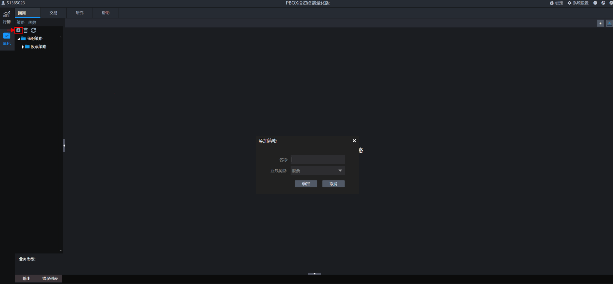
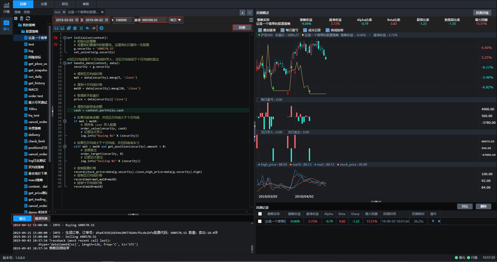
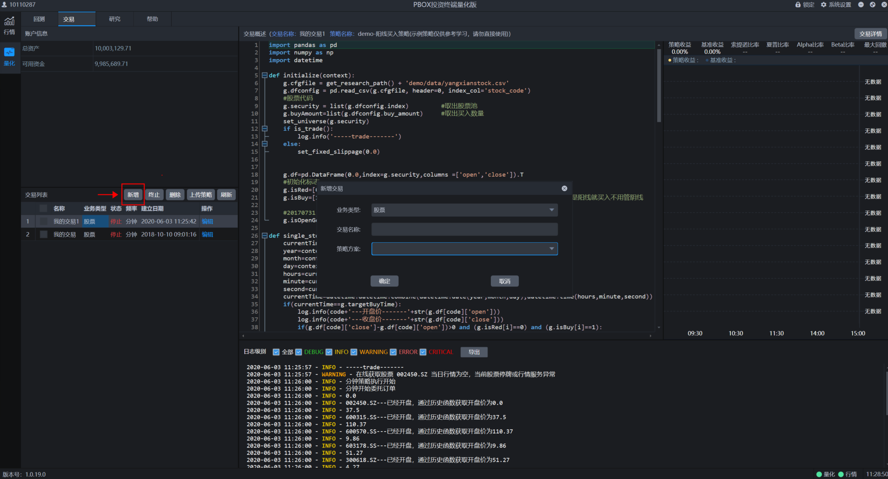
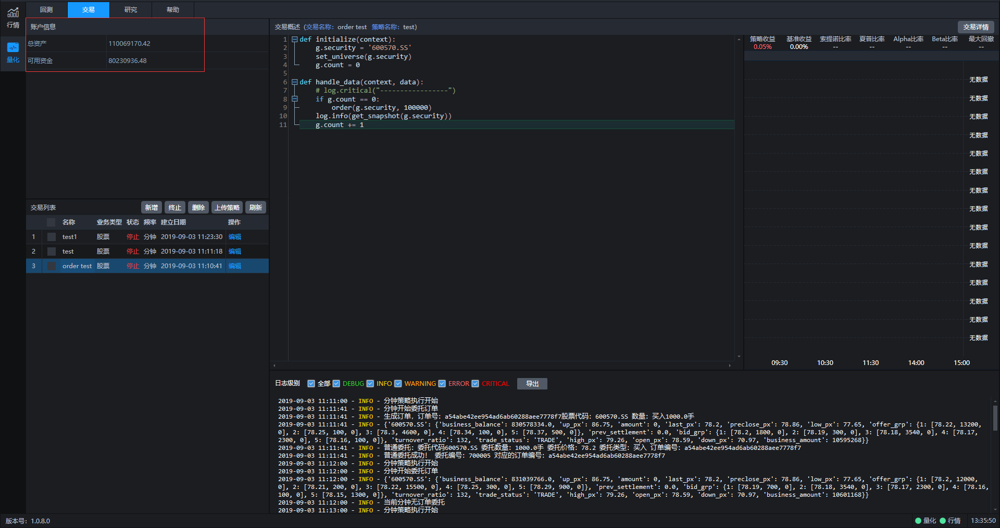
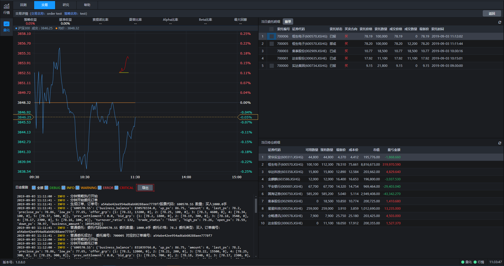
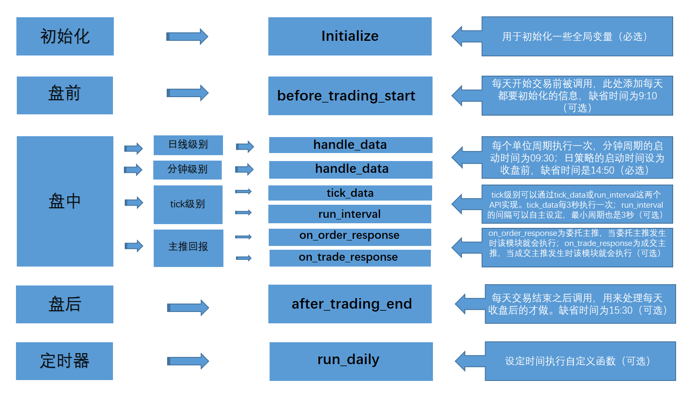
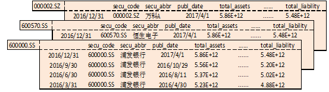

开始回测和交易前需要先新建策略，点击下图中左上角标识进行策略添加。可以选择不同的业务类型（比如股票），然后给策略设定一个名称，添加成功后可以在默认策略模板基础上进行策略编写。

策略添加完成后就可以开始进行回测操作了。回测之前需要对开始时间、结束时间、回测资金、回测基准、回测频率几个要素进行设定，设定完毕后点击保存。然后再点击回测按键，系统就会开始运行回测，回测的评价指标、收益曲线、日志都会在界面中展现。

交易界面点击新增按键进行新增交易操作，策略方案中的对象为所有策略列表中的策略，给本次交易设定名称并点击确定后系统就开始运行交易了。

交易开始运行后，可以实时看到总资产和可用资金情况，同时可以在交易列表查询交易状态。

交易开始运行后，可以点击交易详情，查看策略评价指标、交易明细、持仓明细、交易日志。

回测支持日线级别、分钟级别运行，详见handle_data方法。
交易支持日线级别、分钟级别、tick级别运行，日线级别和分钟级别详见handle_data方法，tick级别运行详见run_interval和tick_data方法。
频率：日线级别
当选择日线频率时，回测和交易都是每天运行一次，运行时间为每天盘后。
频率：分钟级别
当选择分钟频率时，回测和交易都是每分钟运行一次，运行时间为每根分钟K线结束。
频率：tick级别
当选择tick频率时，交易最小频率可以达到3秒运行一次。
盘前运行:
9:30分钟之前为盘前运行时间，交易环境支持运行在run_daily中指定交易时间(如time='09:15')运行的函数；回测环境和交易环境支持运行before_trading_start函数
盘中运行:
9:31(回测)/9:30(交易)~15:00分钟为盘中运行时间，分钟级别回测环境和交易环境支持运行在run_daily中指定交易时间(如time='14:30')运行的函数；回测环境和交易环境支持运行handle_data函数；交易环境支持运行run_interval函数
盘后运行:
15:30分钟为盘后运行时间，回测环境和交易环境支持运行after_trading_end函数(该函数为定时运行)；15:00之后交易环境支持运行在run_daily中指定交易时间(如time='15:10')运行的函数，
使用order系列接口进行股票委托下单，将直接报单到柜台。
目前所支持的业务类型:
1.普通股票买卖(单位：股)。
2.可转债买卖(单位：张，T+0)。
3.融资融券担保品买卖(单位：股)。
4.期货投机类型交易(单位：手，T+0)。
5.LOF基金买卖(单位：股)。
6.ETF基金买卖(单位：股)。
目前所支持的业务类型:
1.普通股票买卖(单位：股)。
2.可转债买卖(具体单位请咨询券商，T+0)。
3.融资融券交易(单位：股)。
4.ETF申赎、套利(单位：份)。
5.国债逆回购(单位：份)。
6.期货投机类型交易(单位：手，T+0)。
7.LOF基金买卖(单位：股)。
8.ETF基金买卖(单位：股)。
9.期权交易(单位：手)。
先来看一个简单但是完整的策略:
def initialize(context):
set_universe('600109.SS')
def handle_data(context, data):
pass一个完整策略只需要两步:
这是一个完整的策略，但是我们没有任何交易，下面我们来添加一些交易
def initialize(context):
g.security = '600109.SS'
# 是否创建订单标识
g.flag = False
set_universe(g.security)
def handle_data(context, data):
if not g.flag:
order(g.security, 1000)
g.flag = True这个策略里，当我们没有创建订单时就买入1000股'600109.SS'，具体的下单API请看order函数。这里我们有了交易，但是只是无意义的交易，没有依据当前的数据做出合理的分析。
下面我们来看一个真正实用的策略
在这个策略里，我们会根据历史价格做出判断:
def initialize(context):
g.security = '600109.SS'
set_universe(g.security)
def handle_data(context, data):
security = g.security
sid = g.security
# 取得过去五天的历史价格
df = get_history(5, '1d', 'close', security, fq=None, include=False)
# 取得过去五天的平均价格
average_price = round(df['close'][-5:].mean(), 3)
# 取得上一时间点价格
current_price = data[sid]['close']
# 取得当前的现金
cash = context.portfolio.cash
# 如果上一时间点价格高出五天平均价1%, 则全仓买入
if current_price > 1.01*average_price:
# 用所有 cash 买入股票
order_value(g.security, cash)
log.info('buy %s' % g.security)
# 如果上一时间点价格低于五天平均价, 则空仓卖出
elif current_price < average_price and get_position(security).amount > 0:
# 卖出所有股票,使这只股票的最终持有量为0
order_target(g.security, 0)
log.info('sell %s' % g.security)服务器异常、策略优化等诸多场景，都会使得正在进行的模拟盘和实盘策略存在中断后再重启的需求，但是一旦交易中止后，策略中存储在内存中的全局变量就清空了，因此通过持久化处理为量化交易保驾护航必不可少。
使用pickle模块保存股票池、账户信息、订单信息、全局变量g定义的变量等内容。
注意事项：
class Test(object):
count = 5
def print_info(self):
self.count += 1
log.info("a" * self.count)
def initialize(context):
g.security = "600109.SS"
set_universe(g.security)
# 初始化无法被序列化类对象，并赋值为私有变量，落地持久化信息时跳过保存该变量
g.__test_class = Test()
def handle_data(context, data):
# 调用私有变量中定义的方法
g.__test_class.print_info()使用pickle模块保存 g 对象(全局变量)。
import pickle
from collections import defaultdict
NOTEBOOK_PATH = '/home/fly/notebook/'
'''
持仓N日后卖出，仓龄变量每日pickle进行保存，重启策略后可以保证逻辑连贯
'''
def initialize(context):
#尝试启动pickle文件
try:
with open(NOTEBOOK_PATH+'hold_days.pkl','rb') as f:
g.hold_days = pickle.load(f)
#定义空的全局字典变量
except:
g.hold_days = defaultdict(list)
g.security = '600109.SS'
set_universe(g.security)
# 仓龄增加一天
def before_trading_start(context, data):
if g.hold_days:
g.hold_days[g.security] += 1
# 每天将存储仓龄的字典对象进行pickle保存
def handle_data(context, data):
if g.security not in list(context.portfolio.positions.keys()) and g.security not in g.hold_days:
order(g.security, 100)
g.hold_days[g.security] = 1
if g.hold_days:
if g.hold_days[g.security] > 5:
order(g.security, -100)
del g.hold_days[g.security]
with open(NOTEBOOK_PATH+'hold_days.pkl','wb') as f:
pickle.dump(g.hold_days,f,-1)
ptrade量化引擎以事件触发为基础，通过初始化事件（initialize）、盘前事件（before_trading_start）、盘中事件（handle_data）、盘后事件（after_trading_end）来完成每个交易日的策略任务。
initialize和handle_data是一个允许运行策略的最基础结构，也就是必选项，before_trading_start和after_trading_end是可以按需运行的。
handle_data仅满足日线和分钟级别的盘中处理，tick级别的盘中处理则需要通过tick_data或者run_interval来实现。
ptrade还支持委托主推事件（on_order_response）、交易主推事件（on_trade_response），可以通过委托和成交的信息来处理策略逻辑，是tick级的一个补充。
除了以上的一些事件以外，ptrade也支持通过定时任务来运行策略逻辑，可以通过run_daily接口实现。

initialize(context)该函数仅在回测、交易模块可用
该函数用于初始化一些全局变量，是策略运行的唯二必须定义函数之一。
注意事项：
该函数只会在回测和交易启动的时候运行一次
context: Context对象，存放有当前的账户及持仓信息；
None
def initialize(context):
#g为全局对象
g.security = '600109.SS'
set_universe(g.security)
def handle_data(context, data):
order('600109.SS',100)before_trading_start(context, data)该函数仅在回测、交易模块可用
该函数在每天开始交易前被调用一次，用于添加每天都要初始化的信息，如无盘前初始化需求，该函数可以在策略中不做定义。
注意事项：
context: Context对象，存放有当前的账户及持仓信息；
data：保留字段暂无数据；
None
def initialize(context):
#g为全局变量
g.security = '600109.SS'
set_universe(g.security)
def before_trading_start(context, data):
log.info(g.security)
def handle_data(context, data):
order('600109.SS',100)handle_data(context, data)该函数仅在回测、交易模块可用
该函数在交易时间内按指定的周期频率运行，是用于处理策略交易的主要模块，根据策略保存时的周期参数分为每分钟运行和每天运行，是策略运行的唯二必须定义函数之一。
注意事项：
context: Context对象，存放有当前的账户及持仓信息；
data：一个字典(dict)，key是标的代码，value是当时的SecurityUnitData对象，存放当前周期（日线策略，则是当天；分钟策略，则是这一分钟）的数据；
注意：为了加速，data中的数据只包含股票池中所订阅标的的信息，可使用data[security]的方式来获取当前周期对应的标的信息；
None
def initialize(context):
#g为全局变量
g.security = '600109.SS'
set_universe(g.security)
def handle_data(context, data):
order('600109.SS',100)after_trading_end(context, data)该函数仅在回测、交易模块可用
该函数会在每天交易结束之后调用，用于处理每天收盘后的操作，如无盘后处理需求，该函数可以在策略中不做定义。
注意事项：
context: Context对象，存放有当前的账户及持仓信息；
data：保留字段暂无数据；
None
def initialize(context):
#g为全局变量
g.security = '600109.SS'
set_universe(g.security)
def handle_data(context, data):
order('600109.SS',100)
def after_trading_end(context, data):
log.info(g.security)tick_data(context, data)该函数仅交易模块可用
该函数可以用于处理tick级别策略的交易逻辑，每隔3秒执行一次，如无tick处理需求，该函数可以在策略中不做定义。
注意事项：
context: Context对象，存放有当前的账户及持仓信息；
data: 一个字典（dict），key为对应的标的代码（如：'600109.SS'），value为一个字典（dict），包含order（逐笔委托）、tick（当前tick数据）、transcation（逐笔成交）三项
结构如下：
{'股票代码':
{
'order(最近一条逐笔委托)':DataFrame/None,
'tick(当前tick数据)':DataFrame,
'transcation(最近一条逐笔成交)':DataFrame/None,
}
}每项具体介绍：
order - 逐笔委托对应DataFrame包含字段：
business_time：时间戳毫秒级
hq_px：价格
business_amount：委托量
order_no：委托编号
business_direction：委托方向
0 – 卖；
1 – 买；
2 – 借入；
3 – 出借；
trans_kind：委托类别
1-- 市价委托；
2 -- 限价委托；
3 -- 本方最优；
tick - tick数据对应DataFrame包含字段：
amount：持仓量
avg_px：均价
bid_grp：买档位，dict类型，内容如：{1:[42.71,200,0],2:[42.74,200,0],3:[42.75,700,...，以档位为Key，以list为Value，每个Value包含：委托价格、委托数量和委托笔数；
business_amount：成交数量；
business_amount_in：内盘成交量；
business_amount_out：外盘成交量
business_balance：成交金额；
business_count：成交笔数；
circulation_amount：流通股本；
close_px：今日收盘
current_amount：最近成交量(现手)；
down_px：跌停价格；
end_trade_date：最后交易日
entrust_diff：委差；
entrust_rate：委比；
high_px：最高价；
hsTimeStamp：时间戳，格式为YYYYMMDDHHMISS，如20170711141612，表示2017年7月11日14时16分12秒的tick数据信息；
issue_date：上市日期
last_px：最新成交价；
low_px：最低价；
offer_grp：卖档位，dict类型，内容如：{1:[42.71,200,0],2:[42.74,200,0],3:[42.75,700,...，以档位为Key，以list为Value，每个Value包含：委托价格、委托数量和委托笔数；
open_px：今开盘价；
pb_rate：市净率；
pe_rate：动态市盈率；
preclose_px：昨收价；
prev_settlement：昨结算
px_change_rate: 涨跌幅
settlement：结算价
start_trade_date：首个交易日
tick_size：最小报价单位
total_bid_turnover: 委买金额
total_bidqty: 委买量
total_offer_turnover: 委卖金额
total_offerqty: 委卖量
trade_mins：交易时间，距离开盘已过交易时间，如100则表示每日240分钟交易时间中的第100分钟；
trade_status：交易状态；
START -- 市场启动(初始化之后，集合竞价前)
PRETR -- 盘前
OCALL -- 开始集合竞价
TRADE -- 交易(连续撮合)
HALT -- 暂停交易
SUSP -- 停盘
BREAK -- 休市
POSTR -- 盘后
ENDTR -- 交易结束
STOPT -- 长期停盘，停盘n天，n>=1
DELISTED -- 退市
POSMT -- 盘后交易
PCALL -- 盘后集合竞价
INIT -- 盘后固定价格启动前
ENDPT -- 盘后固定价格闭市阶段
POSSP -- 盘后固定价格停牌
turnover_ratio：换手率
up_px：涨停价格；
vol_ratio：量比；
wavg_px：加权平均价；
transcation - 逐笔成交对应DataFrame包含字段：
business_time：时间戳毫秒级；
hq_px：价格；
business_amount：成交量；
trade_index：成交编号；
business_direction：成交方向；
0 – 卖；
1 – 买；
buy_no: 叫买方编号；
sell_no: 叫卖方编号；
trans_flag: 成交标记；
0 – 普通成交；
1 – 撤单成交；
trans_identify_am: 盘后逐笔成交序号标识；
0 – 盘中；
1 – 盘后；
channel_num: 成交通道信息；返回
None
def initialize(context):
g.security = '600109.SS'
set_universe(g.security)
def tick_data(context,data):
# 获取买一价
security = g.security
current_price = eval(data[security]['tick']['bid_grp'][0])[1][0]
log.info(current_price)
# 获取买二价
# current_price = eval(data[security]['tick']['bid_grp'][0])[2][0]
# 获取买三量
# current_amount = eval(data[security]['tick']['bid_grp'][0])[3][1]
# 获取tick最高价
# current_high_price = data[security]['tick']['high_px'][0]
# 最近一笔逐笔成交的成交量
# transaction = data[security]["transcation"]
# business_amount = list(transaction["business_amount"])
# if len(business_amount) > 0:
# log.info("最近一笔逐笔成交的成交量：%s" % business_amount[0])
# 最近一笔逐笔委托的委托类别
# order = data[security]["order"]
# trans_kind = list(order["trans_kind"])
# if len(trans_kind) > 0:
# log.info("最近一笔逐笔委托的委托类别：%s" % trans_kind[0])
if current_price > 38.19:
# 按买一档价格下单
order_tick(security, 100, 1)
def handle_data(context, data):
passon_order_response(context, order_list)该函数仅在交易模块可用
该函数会在委托主推回调时响应，比引擎、get_order()和get_orders()函数更新Order状态的速度更快，适合对速度要求比较高的策略。
注意事项：
context: Context对象，存放有当前的账户及持仓信息；
order_list：一个列表，当前委托单发生变化时，发生变化的委托单列表。委托单以字典形式展现，内容包括：'entrust_no'(委托编号), 'error_info'(错误信息), 'order_time'(委托时间), 'stock_code'(股票代码), 'amount'(委托数量), 'price'(委托价格), 'business_amount'(成交数量), 'status'(委托状态), 'entrust_type'(委托类别), 'entrust_prop'(委托属性), 'order_id'(Order对象编号)；
字段备注:
None
本交易产生的主推：[{'business_amount': 0.0, 'order_id': 'e71d1684c8a74b4ca00b3326c9eb8614', 'order_time': '2022-05-10 15:52:10.780', 'entrust_prop': '0', 'status': '2', 'price': 36.95, 'entrust_no': '700006', 'error_info': '', 'amount': 200, 'stock_code': '600109.SS', 'entrust_type': '0'}]
非本交易产生的主推：[{'business_amount': 0.0, 'order_id': '', 'order_time': '2022-05-10 15:54:30.204', 'entrust_prop': '0', 'status': '2', 'price': 36.95, 'entrust_no': '700008', 'error_info': '', 'amount': 200, 'stock_code': '600109.SS', 'entrust_type': '0'}]def initialize(context):
g.security = ['600109.SS','002416.SZ']
set_universe(g.security)
g.flag = 0
def on_order_response(context, order_list):
log.info(order_list)
if(g.flag==0):
order('600109.SS', 100)
g.flag = 1
else:
log.info("end")
def handle_data(context, data):
order('600109.SS', 100)on_trade_response (context, trade_list)该函数仅在交易模块可用
该函数会在成交主推回调时响应，比引擎和get_trades()函数更新Order状态的速度更快，适合对速度要求比较高的策略。
注意事项：
context: Context对象，存放有当前的账户及持仓信息；
trade_list：一个列表，当前成交单发生变化时，发生变化的成交单列表。成交单以字典形式展现，内容包括：'entrust_no'(委托编号), 'business_time'(成交时间), 'stock_code'(股票代码), 'entrust_bs'(成交方向), 'business_amount'(成交数量), 'business_price'(成交价格), 'business_balance'(成交额), 'business_id'(成交编号), 'status'(委托状态), 'order_id'(Order对象编号)；
字段备注:
None
本交易产生的主推：[{'status': '8', 'business_id': '76', 'business_amount': 200, 'order_id': 'e71d1684c8a74b4ca00b3326c9eb8614', 'entrust_no': '700006', 'business_balance': 7390.000000000001, 'business_price': 36.95, 'stock_code': '600109.SS', 'entrust_bs': '1', 'business_time': '2022-05-10 15:51:47'}]
非本交易产生的主推：[{'status': '8', 'business_id': 'b155235000000003', 'business_amount': 200, 'order_id': '', 'entrust_no': '700007', 'business_balance': 3000.0, 'business_price': 15.0, 'stock_code': '000001.SZ', 'entrust_bs': '1', 'business_time': '2022-05-10 15:52:35'}]def initialize(context):
g.security = ['600109.SS','002416.SZ']
set_universe(g.security)
g.flag = 0
def on_trade_response(context, trade_list):
log.info(trade_list)
if(g.flag==0):
order('600109.SS', 100)
g.flag = 1
else:
log.info("end")
def handle_data(context, data):
order('600109.SS', 100)set_universe(security_list)该函数仅在回测、交易模块可用
该函数用于设置或者更新此策略要操作的股票池。
注意事项：
股票策略中，该函数只用于设定get_history函数的默认security_list入参, 除此之外并无其他用处，因此为非必须设定的函数。
security_list: 股票列表，支持单支或者多支股票(list[str]/str)
None
def initialize(context):
g.security = ['600109.SS','600571.SS']
# 将g.security中的股票设置为股票池
set_universe(g.security)
def handle_data(context, data):
# 获取初始化设定的股票池行情数据
his = get_history(5, '1d', 'close', security_list=None)set_benchmark(sids)该函数仅在回测、交易模块可用
该函数用于设置策略的比较基准，前端展现的策略评价指标都基于此处设置的基准标的。
注意事项：
此函数只能在initialize使用。
security：股票/指数/ETF代码(str)
如果不做基准设置，默认选定沪深300指数(000300.SS)的每日价格作为判断策略好坏和一系列风险值计算的基准。如果要指定其他股票/指数/ETF的价格作为基准，就需要使用set_benchmark。
None
def initialize(context):
g.security = '000001.SZ'
set_universe(g.security)
#将上证50（000016.SS）设置为参考基准
set_benchmark('000016.SS')
def handle_data(context, data):
order('000001.SZ',100)set_commission(commission_ratio=0.0003, min_commission=5.0, type="STOCK")该函数仅在回测模块可用
该函数用于设置佣金费率。
注意事项：
关于回测手续费计算：手续费=佣金费+经手费
佣金费=佣金费率*交易总金额(若佣金费计算后小于设置的最低佣金，则佣金费取最小佣金)
经手费=经手费率(万分之0.487)*交易总金额
commission_ratio：佣金费率，默认股票每笔交易的佣金费率是万分之三，ETF基金、LOF基金每笔交易的佣金费率是万分之八。(float)
min_commission：最低交易佣金，默认每笔交易最低扣5元佣金。(float)
type：交易类型，不传参默认为STOCK(目前只支持STOCK, ETF, LOF)。(string)
None
def initialize(context):
g.security = '600109.SS'
set_universe(g.security)
#将佣金费率设置为万分之三，将最低手续费设置为3元
set_commission(commission_ratio =0.0003, min_commission=3.0)
def handle_data(context, data):
pass
set_fixed_slippage(fixedslippage=0.0)该函数仅在回测模块可用
该函数用于设置固定滑点，滑点在真实交易场景是不可避免的，因此回测中设置合理的滑点有利于让回测逼近真实场景。
注意事项：
无
fixedslippage：固定滑点，委托价格与最后的成交价格的价差设置，这个价差是一个固定的值(比如0.02元，撮合成交时委托价格±0.01元)。最终的成交价格=委托价格±float(fixedslippage)/2。
None
def initialize(context):
g.security = "600109.SS"
set_universe(g.security)
# 将滑点设置为固定的0.2元，即原本买入交易的成交价为10元，则设置之后成交价将变成10.1元
set_fixed_slippage(fixedslippage=0.2)
def handle_data(context, data):
pass
set_slippage(slippage=0.001)该函数仅在回测模块可用
该函数用于设置滑点比例，滑点在真实交易场景是不可避免的，因此回测中设置合理的滑点有利于让回测逼近真实场景。
注意事项：
无
slippage：滑点比例，委托价格与最后的成交价格的价差设置，这个价差是当时价格的一个百分比(比如设置0.002时，撮合成交时委托价格±当前周期价格*0.001)。最终成交价格=委托价格±委托价格*float(slippage)/2。
None
def initialize(context):
g.security = "600109.SS"
set_universe(g.security)
# 将滑点设置为0.002
set_slippage(slippage=0.002)
def handle_data(context, data):
passset_volume_ratio(volume_ratio=0.25)该函数仅在回测模块可用
该函数用于设置回测中单笔委托的成交比例，使得盘口流动性方面的设置尽量逼近真实交易场景。
注意事项：
假如委托下单数量大于成交比例计算后的数量，系统会按成交比例计算后的数量撮合，差额部分委托数量不会继续挂单。
volume_ratio：设置成交比例，默认0.25，即指本周期最大成交数量为本周期市场可成交总量的四分之一(float)
None
def initialize(context):
g.security = '600109.SS'
set_universe(g.security)
#将最大成交数量设置为本周期可成交总量的二分之一
set_volume_ratio(volume_ratio = 0.5)
def handle_data(context, data):
passset_limit_mode(limit_mode='LIMIT')该函数仅在回测模块可用
该函数用于设置回测的成交数量限制模式。对于月度调仓等低频策略，对流动性冲击不是很敏感，不做成交量限制可以让回测更加便捷。
注意事项：
不做限制之后实际撮合成交量是可以大于该时间段的实际成交总量。
limit_mode：设置成交数量限制模式，即指回测撮合交易时对成交数量是否做限制进行控制(str)
默认为限制，入参'LIMIT'，不做限制则入参'UNLIMITED'
None
def initialize(context):
g.security = '600109.SS'
set_universe(g.security)
#回测中不限制成交数量
set_limit_mode('UNLIMITED')
def handle_data(context, data):
passset_yesterday_position(poslist)该函数仅在回测模块可用
该函数用于设置回测的初始底仓。
注意事项：
该函数会使策略初始化运行就创建出持仓对象，里面包含了设置的持仓信息。
poslist：list类型数据，该list中是字典类型的元素，参数不能为空(list[dict[str:str],...])；
数据格式及参数字段如下：
[{
'sid':标的代码,
'amount':持仓数量,
'enable_amount':可用数量,
'cost_basis':每股的持仓成本价格,
}]参数也可通过csv文件的形式传入，参考接口convert_position_from_csv
None
def initialize(context):
g.security = '600109.SS'
set_universe(g.security)
# 设置底仓
pos={}
pos['sid'] = "600109.SS"
pos['amount'] = "1000"
pos['enable_amount'] = "600"
pos['cost_basis'] = "55"
set_yesterday_position([pos])
def handle_data(context, data):
#卖出100股
order(g.security,-100)set_parameters(**kwargs)该函数仅在回测、交易模块可用
该函数用于设置策略中的配置参数。
注意事项：
1、该函数入参格式必须为a=b样式。
2、not_restart_trade、server_restart_not_do_before两个入参必须在initialize模块中设置
3、not_restart_trade入参配置说明(交易场景务必了解)：
服务器环境重启拉起交易时，initialize和before_trading_start函数会被重复调用，请务必检查策略编写逻辑：
(1)避免在这两个函数中设置无法被系统持久化保存的变量，变量一旦被初始化会导致策略逻辑异常。
(2)避免在这两个函数中调用委托接口，造成重复委托。
您可将not_restart_trade入参设置为1，在交易时间段避免重复执行的问题，交易时间段默认为09:00-11:30、13:00-15:30，实际以券商的配置为准。
4、server_restart_not_do_before入参配置说明(交易场景务必了解)：
服务器环境重启拉起交易时，before_trading_start函数默认会被调用，为了避免重复调用带来的一系列问题(同上)，您可将server_restart_not_do_before入参设置为"1"，即一个交易日内before_trading_start函数仅调用一次。
holiday_not_do_before：交易中节假日是否执行before_trading_start。缺省，执行；1，不执行。
tick_data_no_l2：tick_data中data是否包含order和transcation。缺省，包含；1，不包含。
receive_other_response：策略中是否接收非本交易产生的主推。缺省，不接收；1，接收。
receive_cancel_response：策略中是否接收撤单委托产生的主推。缺省，不接收；1，接收。
not_restart_trade：交易时间段若服务器重启，是否自动执行重新拉起本交易。缺省，执行；1，不执行。
server_restart_not_do_before：若服务器重启导致重拉交易，是否重复执行before_trading_start函数。缺省，执行；1，不执行。
None
def initialize(context):
# 初始化策略
g.security = "600109.SS"
set_universe(g.security)
# 设置非交易日不执行before_trading_start
# 设置tick_data中data不包含order和transaction
# 设置接收非本交易产生的主推
# 设置接收撤单委托产生的主推
set_parameters(holiday_not_do_before="1", tick_data_no_l2="1", receive_other_response="1",
receive_cancel_response="1", not_restart_trade="1", server_restart_not_do_before="1")
def before_trading_start(context, data):
log.info("do before_trading_start")
g.count = 0
def on_order_response(context, order_list):
log.info("委托主推：%s" % order_list)
def on_trade_response(context, trade_list):
log.info("成交主推：%s" % trade_list)
def tick_data(context, data):
if g.count == 0:
log.info(data[g.security])
g.count += 1
def handle_data(context, data):
passrun_daily(context, func, time='9:31')该函数仅在回测、交易模块可用
该函数用于以日为单位周期性运行指定函数，可对运行触发时间进行指定。
注意事项：
1、该函数只能在初始化阶段initialize函数中调用。
2、该函数可以多次设定，以实现多个定时任务。
3、股票策略回测中，当回测周期为分钟时，time的取值指定在09:31~11:30与13:00~15:00之间，当回测周期为日时，无论设定值是多少都只会在15:00执行；交易中不受此时间限制。
context: Context对象，存放有当前的账户及持仓信息(Context)；
func：自定义函数名称，此函数必须以context作为参数(Callable[[Context], None])；
time：指定周期运行具体触发运行时间点，交易场景可设置范围：00:00~23:59，必传字段。
None
# 定义一个财务数据获取函数，每天执行一次
def initialize(context):
run_daily(context, get_finance, time='9:31')
g.security = '600109.SS'
set_universe(g.security)
def get_finance(context):
re = get_fundamentals(g.security,'balance_statement','total_assets')
log.info(re)
def handle_data(context, data):
passrun_interval(context, func, seconds=10)该函数仅在交易模块可用
该函数用于以设定时间间隔（单位为秒）周期性运行指定函数，可对运行触发时间间隔进行指定。
注意事项：
1、该函数只能在初始化阶段initialize函数中调用。
2、该函数可以多次设定，会以多个线程并行运行，但要小心不同线程之间的逻辑关联处理
3、seconds设置最小时间间隔为3秒，小于3秒默认设定为3秒。
context: Context对象，存放有当前的账户及持仓信息(Context)；
func：自定义函数名称，此函数必须以context作为参数(Callable[[Context], None])；
seconds：设定时间间隔（单位为秒），取值为正整数(int)。
None
# 定义一个周期处理函数，每10秒执行一次
def initialize(context):
run_interval(context, interval_handle, seconds = 10)
g.security = '600109.SS'
set_universe(g.security)
def interval_handle(context):
snapshot = get_snapshot(g.security)
log.info(snapshot)
def handle_data(context, data):
passget_trading_day(day)该函数在研究、回测、交易模块可用
该函数用于获取当前时间数天前或数天后的交易日期。
注意事项：
1、默认情况下，回测中当前时间为策略中调用该接口的回测日日期(context.blotter.current_dt)。
2、默认情况下，研究中当前时间为调用当天日期。
3、默认情况下，交易中当前时间为调用当天日期。
day：表示天数，正的为数天后，负的为数天前，day取0表示获取当前交易日，如果当前日期为非交易日则返回上一交易日的日期。day默认取值为0，不建议获取交易所还未公布的交易日期(int)；
date：datetime.date日期对象
def initialize(context):
g.security = ['600670.SS', '000001.SZ']
set_universe(g.security)
def handle_data(context, data):
# 获取后一天的交易日期
previous_trading_date = get_trading_day(1)
log.info(previous_trading_date)
# 获取前一天的交易日期
next_trading_date = get_trading_day(-1)
log.info(next_trading_date)get_all_trades_days(date=None)该函数在研究、回测、交易模块可用
该函数用于获取某个日期之前的所有交易日日期。
注意事项：
1、默认情况下，回测中date为策略中调用该接口的回测日日期(context.blotter.current_dt)。
2、默认情况下，研究中date为调用当天日期。
3、默认情况下，交易中date为调用当天日期。
date：如'2016-02-13'或'20160213'
一个包含所有交易日的numpy.ndarray
def initialize(context):
# 获取当前回测日期之前的所有交易日
all_trades_days = get_all_trades_days()
log.info(all_trades_days)
all_trades_days_date = get_all_trades_days('20150312')
log.info(all_trades_days_date)
g.security = ['600109.SS', '000001.SZ']
set_universe(g.security)
def handle_data(context, data):
passget_trade_days(start_date=None, end_date=None, count=None)该函数在研究、回测、交易模块可用
该函数用于获取指定范围交易日期。
注意事项：
1、默认情况下，回测中end_date为策略中调用该接口的回测日日期(context.blotter.current_dt)。
2、默认情况下，研究中end_date为调用当天日期。
3、默认情况下，交易中end_date为调用当天日期。
start_date：开始日期，与count二选一，不可同时使用。如'2016-02-13'或'20160213',开始日期最早不超过1990年(str)；
end_date：结束日期，如'2016-02-13'或'20160213'。如果输入的结束日期大于今年则至多返回截止到今年的数据(str)；
count：数量，与start_date二选一，不可同时使用，必须大于0。表示获取end_date往前的count个交易日，包含end_date当天。count建议不大于3000，即返回数据的开始日期不早于1990年(int)；
一个包含指定范围交易日的numpy.ndarray
def initialize(context):
# 获取指定范围内交易日
trade_days = get_trade_days('2016-01-01', '2016-02-01')
log.info(trade_days)
g.security = ['600109.SS', '000001.SZ']
set_universe(g.security)
def handle_data(context, data):
# 获取回测日期往前10天的所有交易日，包含历史回测日期
trading_days = get_trade_days(count=10)
log.info(trading_days)get_market_list()该函数在研究、回测、交易模块可用
该函数用于返回当前市场列表目录。
注意事项：
回测和交易中仅限before_trading_start和after_trading_end中使用
无
返回pandas.DataFrame对象，返回字段包括:
finance_mic – 市场编码(str:str)
finance_name – 市场名称(str:str)
get_market_list()如返回：
| finance_mic | finance_name | |
|---|---|---|
| 0 | A | 美国证券交易所 |
| 1 | CBJC | 北京邮票 |
| 2 | CBOT | 芝加哥商品期货 |
| 3 | CCFX | 中国金融期货交易所 |
| 4 | CCGG | 中国国际文交所 |
| 5 | CCJC | 卡巴拉长江交易所 |
| … | … | … |
| 66 | XFUND | 基金 |
| 67 | XHKG-SS | 沪港通 |
| 68 | XHKG-SZ | 深港通 |
| 69 | XSGE | 上海期货交易所 |
| 70 | XSHO | 上海个股期权 |
| 71 | XZCE | 郑州商品交易所 |
| 72 | YCME | 渝川玉石 |
get_market_detail(finance_mic)该函数在研究、回测、交易模块可用
该函数用于返回市场编码对应的详细信息。
注意事项：
回测和交易中仅限before_trading_start和after_trading_end中使用
finance_mic: 市场代码，相关市场编码参考get_market_list返回信息(str)。
返回市场详细信息，类型为pandas.DataFrame对象，返回字段包括：
产品代码: prod_code(str:str)
产品名称: prod_name(str:str)
类型代码: hq_type_code(str:str)
时间规则: trade_time_rule(str:numpy.int64)
返回如下:
hq_type_code prod_code prod_name trade_time_rule
0 MRI 000001 上证指数 0
1 MRI 000002 Ａ股指数 0
2 MRI 000003 Ｂ股指数 0
3 MRI 000004 工业指数 0
4 MRI 000005 商业指数 0
5 MRI 000006 地产指数 0
6 MRI 000007 公用指数 0
7 MRI 000008 综合指数 0
# 获取上海证券交易所相关信息 'XSHG'/'SS'
get_market_detail('XSHG')get_cb_list()该函数仅在交易模块可用
返回当前可转债市场的所有代码列表(包含停牌代码)。
注意事项：
为减小对行情服务压力，该函数在交易模块中同一分钟内多次调用返回当前分钟首次查询的缓存数据。
无
返回当前可转债市场的所有代码列表(包含停牌代码)(list)。失败则返回空列表[]。
def initialize(context):
g.security = "600109.SS"
set_universe(g.security)
run_daily(context, get_trade_cb_list, "9:25")
def before_trading_start(context, data):
# 每日清空，避免取到昨日市场代码表
g.trade_cb_list = []
def handle_data(context, data):
pass
# 获取当天可交易的可转债代码列表
def get_trade_cb_list(context):
cb_list = get_cb_list()
cb_snapshot = get_snapshot(cb_list)
# 代码有行情快照并且交易状态不在暂停交易、停盘、长期停盘、退市状态的判定为可交易代码
g.trade_cb_list = [cb_code for cb_code in cb_list if
cb_snapshot.get(cb_code, {}).get("trade_status") not in
[None, "HALT", "SUSP", "STOPT", "DELISTED"]]
log.info("当天可交易的可转债代码列表为：%s" % g.trade_cb_list)get_history(count, frequency='1d', field='close', security_list=None, fq=None, include=False, fill='nan', is_dict=False)该函数仅在回测、交易模块可用
该接口用于获取最近N条历史行情K线数据。支持多股票、多行情字段获取。
注意事项：
该接口只能获取2005年后的数据。
针对停牌场景，我们没有跳过停牌的日期，无论对单只股票还是多只股票进行调用，时间轴均为二级市场交易日日历，停牌时使用停牌前的数据填充，成交量为0，日K线可使用成交量为0的逻辑进行停牌日过滤。
count： K线数量，大于0，返回指定数量的K线行情；必填参数；入参类型：int；
frequency：K线周期，现有支持1分钟线(1m)、5分钟线(5m)、15分钟线(15m)、30分钟线(30m)、60分钟线(60m)、120分钟线(120m)、日线(1d)、周线(1w/weekly)、月线(mo/monthly)、季度线(1q/quarter)和年线(1y/yearly)频率的数据；选填参数，默认为'1d'；入参类型：str；
field：指明数据结果集中所支持输出的行情字段；选填参数，默认为['open','high','low','close','volume','money','price']；入参类型：list[str,str]或str；输出字段包括：
security_list：要获取数据的股票列表；选填参数，None表示在上下文中的universe中选中的所有股票；入参类型：list[str,str]或str；
fq：数据复权选项，支持包括，pre-前复权，post-后复权，dypre-动态前复权，None-不复权；选填参数，默认为None；入参类型：str；
include：是否包含当前周期，True –包含，False-不包含；选填参数，默认为False；入参类型：bool；
fill：行情获取不到某一时刻的分钟数据时，是否用上一分钟的数据进行填充该时刻数据，'pre'–用上一分钟数据填充，'nan'–NaN进行填充(仅交易有效)；选填参数，默认为'nan'；入参类型：str；
is_dict：返回是否是字典(dict)格式{str: array()}，True –是，False-不是；选填参数，默认为False；返回为字典格式取数速度相对较快；入参类型：bool；
当获取单支股票（单只股票必须为字符串类型security_list='600109.SS'，不能用security_list=['600109.SS']）的时候，无论行情字段field入参单个或多个，返回的都是pandas.DataFrame对象，行索引是datetime.datetime对象，列索引是行情字段,为str类型。比如：
如果当前时间是2017-04-18，get_history(5, '1d', 'open', '600109.SS', fq=None, include=False)将返回：
| open | |
|---|---|
| 2017-04-11 | 40.30 |
| 2017-04-12 | 40.08 |
| 2017-04-13 | 40.03 |
| 2017-04-14 | 40.04 |
| 2017-04-17 | 39.90 |
当获取多支股票（多只股票必须为list类型，特殊情况：当list只有一个股票时仍然当做多股票处理，比如security_list=['600109.SS']）的时候，如果行情字段field入参为单个，返回的是pandas.DataFrame对象，行索引是datetime.datetime对象，列索引是股票代码的编号,为str类型。比如：
如果当前时间是2017-04-18，get_history(5, '1d', 'open', ['600109.SS','600571.SS'], fq=None, include=False)将返回：
| 600109.SS | 600571.SS | |
|---|---|---|
| 2017-04-11 | 40.30 | 17.81 |
| 2017-04-12 | 40.08 | 17.56 |
| 2017-04-13 | 40.03 | 17.42 |
| 2017-04-14 | 40.04 | 17.40 |
| 2017-04-17 | 39.90 | 17.49 |
当获取多支股票（多只股票必须为list类型，特殊情况：当list只有一个股票时仍然当做多股票处理，比如security_list=['600109.SS']）的时候，如果行情字段field入参为多个，则返回pandas.Panel对象，items索引是行情字段（如'open'、'close'等），里面是很多pandas.DataFrame对象，每个pandas.DataFrame的行索引是datetime.datetime对象， 列索引是股票代码,为str类型，比如:
如果当前时间是2015-01-07，get_history(2, frequency='1d', field=['open','close'], security_list=['600109.SS', '600571.SS'], fq=None, include=False)['open']将返回:
| 600109.SS | 600571.SS | |
|---|---|---|
| 2015-01-05 | 54.77 | 26.93 |
| 2015-01-06 | 51.00 | 25.83 |
假如要对panel索引中的对象进行转换，比如将items索引由行情字段转换成股票代码，可以通过panel_info = panel_info.swapaxes("minor_axis", "items")的方法转换。
比如:
panel_info = get_history(2, frequency='1d', field=['open','close'], security_list=['600109.SS', '600571.SS'], fq=None, include=False)
按默认索引：df = panel_info['open']
对默认索引做转换：panel_info = panel_info.swapaxes("minor_axis", "items")
转换之后的索引：df = panel_info['600109.SS']
关于numpy和pandas，请看下面的第三方库介绍。
def initialize(context):
g.security = ['600109.SS', '000001.SZ']
set_universe(g.security)
def before_trading_start(context, data):
# 获取农业版块过去10天的每日收盘价
industry_info = get_history(10, frequency="1d", field="close", security_list="A01000.XBHS")
log.info(industry_info)
def handle_data(context, data):
# 股票池中全部股票过去5天的每日收盘价
his = get_history(5, '1d', 'close', security_list=g.security)
log.info('股票池中全部股票过去5天的每日收盘价')
log.info(his)
# 获取600570(国金证券)过去5天的每天收盘价,
# 一个pd.Series对象, index是datatime
log.info('获取600570(国金证券)过去5天的每天收盘价')
log.info(his['600109.SS'])
# 获取600570(国金证券)昨天(数组最后一项)的收盘价
log.info('获取600570(国金证券)昨天的收盘价')
log.info(his['600109.SS'][-1])
# 获取股票池中全部股票昨天的收盘价
log.info('获取股票池中全部股票昨天的收盘价')
log.info(his.iloc[-1])
# 获取600570(国金证券)昨天(数组最后一项)的收盘价
log.info('获取600570(国金证券)昨天的收盘价')
log.info(his.iloc[-1]['600109.SS'])
# 取得每一列的平均值
log.info('取得每一列的平均值')
log.info(his.mean())
# 获取股票池中全部股票的过去10分钟的成交量
his1 = get_history(10, '1m', 'volume')
log.info('获取股票池中全部股票的过去10分钟的成交量')
log.info(his1)
# 获取国金证券的过去5天的每天的收盘价
his2 = get_history(5, '1d', 'close', security_list='600109.SS')
log.info('获取国金证券的过去5天的每天的收盘价')
log.info(his2)
# 获取国金证券的过去5天的每天的后复权收盘价
his3 = get_history(5, '1d', 'close', security_list='600109.SS', fq='post')
log.info('获取国金证券的过去5天的每天的后复权收盘价')
log.info(his3)
# 获取国金证券的过去5周的每周的收盘价
his4 = get_history(5, '1w', 'close', security_list='600109.SS')
log.info('获取国金证券的过去5天的每天的收盘价')
log.info(his4)
# 获取多只股票的开盘价和收盘价数据
panel_info = get_history(2, frequency='1d', field=['open','close'], security_list=g.security)
open_df = panel_info['open']
log.info('获所有股票的取开盘价数据')
log.info(open_df)
df = open_df['600109.SS']
log.info('仅获取国金证券的开盘价数据')
log.info(df)
# panel索引中的对象进行转换
panel_info2 = panel_info.swapaxes("minor_axis", "items")
df = panel_info2['600109.SS']
log.info('仅获取国金证券的开盘价和收盘价数据')
log.info(df)
open_df = df['open']
log.info('获取国金证券的开盘价数据')
log.info(open_df)get_price(security, start_date=None, end_date=None, frequency='1d', fields=None, fq=None, count=None)该函数在研究、回测、交易模块可用
该接口用于获取指定日期的前N条的历史行情K线数据或者指定时间段内的历史行情K线数据。支持多股票、多行情字段获取。
注意事项：
1、start_date与count必须且只能选择输入一个，不能同时输入或者同时都不输入。
2、针对停牌场景，我们没有跳过停牌的日期，无论对单只股票还是多只股票进行调用，时间轴均为二级市场交易日日历，停牌时使用停牌前的数据填充，成交量为0，日K线可使用成交量为0的逻辑进行停牌日过滤。
3、数据返回内容不包括当天数据。
4、count只针对'daily', 'weekly', 'monthly', 'quarter', 'yearly', '1d', '1m', '5m', '15m', '30m', '60m', '120m', '1w', 'mo', '1q', '1y'频率有效，并且输入日期的类型需与频率对应。
5、'weekly', '1w', 'monthly', 'mo', 'quarter', '1q', 'yearly', '1y'频率不支持start_date和end_date组合的入参，只支持end_date和count组合的入参形式。
6、返回的周线数据是由日线数据进行合成。
7、该接口只能获取2005年后的数据。
security：一支股票代码或者一个股票代码的list(list[str]/str)
start_date：开始时间，默认为空。传入格式仅支持：YYYYmmdd、YYYY-mm-dd、YYYY-mm-dd HH:MM、YYYYmmddHHMM，如'20150601'、'2015-06-01'、'2015-06-01 10:00'、'201506011000'(str)；
end_date：结束时间，默认为空，传入格式仅支持：YYYYmmdd、YYYY-mm-dd、YYYY-mm-dd HH:MM、YYYYmmddHHMM，如'20150601'、'2015-06-01'、'2015-06-01 14:00'、'201506011400'(str)；
frequency： 单位时间长度，现有支持1分钟线(1m)、5分钟线(5m)、15分钟线(15m)、30分钟线(30m)、60分钟线(60m)、120分钟线(120m)、日线(1d)、周线(1w/weekly)、月线(mo/monthly)、季度线(1q/quarter)和年线(1y/yearly)频率数据(str)；
fields：指明数据结果集中所支持输出字段(list[str]/str)，输出字段包括 ：
fq：数据复权选项，支持包括，pre-前复权，post-后复权，None-不复权(str)；
count：大于0，不能与start_date同时输入，获取end_date前count根的数据，不支持除天（'daily'/'1d'）、分钟（'1m'）、5分钟线('5m')、15分钟线('15m')、30分钟线('30m')、60分钟线('60m')、120分钟线('120m')、周（'weekly'/'1w'）、（'monthly'/'mo'）、（'quarter'/'1q'）和（'yearly'/'1y'）以外的其它频率(int)；
get_price对于多股票和多字段不同场景下获取返回数据的规则与get_history一致，如下：
当获取单支股票（单只股票必须为字符串类型security='600109.SS'，不能用security=['600109.SS']）和单个或多个字段的时候，返回的是pandas.DataFrame对象，行索引是datetime.datetime对象，列索引是行情字段，为str类型。
例如，输入为get_price(security='600109.SS',start_date='20170201',end_date='20170213',frequency='1d')时，将返回：
open close high low volume price money preclose high_limit low_limit unlimited
2017-02-03 44.47 43.90 44.50 43.58 4418325.0 43.90 193895820.0 44.26 48.69 39.83 0
2017-02-06 43.91 44.10 44.30 43.66 4428487.0 44.10 194979290.0 43.90 48.29 39.51 0
2017-02-07 44.05 43.52 44.07 43.34 5649251.0 43.52 246776480.0 44.10 48.51 39.69 0
2017-02-08 43.59 44.59 44.78 43.53 12570233.0 44.59 557883600.0 43.52 47.87 39.17 0
2017-02-09 44.74 44.74 45.28 44.39 9240223.0 44.74 413875390.0 44.59 49.05 40.13 0
2017-02-10 44.80 44.62 44.98 44.41 8097465.0 44.62 361757300.0 44.74 49.21 40.27 0
2017-02-13 44.32 44.89 45.98 44.02 14931596.0 44.89 672360490.0 44.62 49.08 40.16 0
当获取多支股票（多只股票必须为list类型，特殊情况：当list只有一个股票时仍然当做多股票处理，比如security=['600109.SS']）和单个字段的时候，返回的是pandas.DataFrame对象，行索引是datetime.datetime对象，列索引是股票代码的编号，为str类型。
例如，输入为get_price(['600109.SS'], start_date='20170201', end_date='20170213', frequency='1d', fields='open')时，将返回：
600109.SS
2017-02-03 44.47
2017-02-06 43.91
2017-02-07 44.05
2017-02-08 43.59
2017-02-09 44.74
2017-02-10 44.80
2017-02-13 44.32
如果是获取多支股票（多只股票必须为list类型，特殊情况：当list只有一个股票时仍然当做多股票处理，比如security=['600109.SS']）和多个字段，则返回pandas.Panel对象，items索引是行情字段，为str类型（如'open'、'close'等），里面是很多pandas.DataFrame对象，每个pandas.DataFrame的行索引是datetime.datetime对象， 列索引是股票代码，为str类型。
例如，输入为get_price(['600109.SS','600571.SS'], start_date='20170201', end_date='20170213', frequency='1d', fields=['open','close'])['open']时，将返回：
600109.SS 600571.SS
2017-02-03 44.47 19.36
2017-02-06 43.91 19.00
2017-02-07 44.05 19.27
2017-02-08 43.59 19.10
2017-02-09 44.74 19.47
2017-02-10 44.80 19.57
2017-02-13 44.32 19.22
假如要对panel索引中的对象进行转换，比如将items索引由行情字段转换成股票代码，可以通过panel_info = panel_info.swapaxes("minor_axis", "items")的方法转换。
def initialize(context):
g.security = '600109.SS'
set_universe(g.security)
def handle_data(context, data):
# 获得600109.SS(国金证券)的2015年01月的天数据，只获取open字段
price_open = get_price('600109.SS', start_date='20150101', end_date='20150131', frequency='1d')['open']
log.info(price_open)
# 获取指定结束日期前count天到结束日期的所有开盘数据
# price_open = get_price('600109.SS', end_date='20150131', frequency='daily', count=10)['open']
# log.info(price_open)
# 获取股票指定结束时间前count分钟到指定结束时间的所有数据
# stock_info = get_price('600109.SS', end_date='2015-01-31 10:00', frequency='1m', count=10)
# log.info(stock_info)
# 获取指定结束日期前count周到结束日期所在周的所有开盘数据
# week_open = get_price('600109.SS', end_date='20150131', frequency='1w', count=10)['open']
# log.info(week_open)
# 获取多只股票
# 获取沪深300的2015年1月的天数据，返回一个[pandas.Panel]
security_list = get_index_stocks('000300.XBHS', '20150101')
price = get_price(security_list, start_date='20150101', end_date='20150131')
log.info(price)
# 获取某股票开盘价，行索引是[datetime.datetime]对象，列索引是行情字段
price_open = price['open'][security_list[0]]
log.info(price_open)
# 获取农业版块指定结束日期前count天到结束日期的数据
industry_info = get_price("A01000.XBHS", end_date="20210315", frequency="daily", count=10)
log.info(industry_info)get_individual_entrust(stocks=None, data_count=50, start_pos=0, search_direction=1, is_dict=False)该函数在交易模块可用
该接口用于获取当日逐笔委托行情数据。
注意事项：
1、沪深市场都有逐笔委托数据；
2、逐笔委托，逐笔成交数据需开通level2行情才能获取到数据，否则无数据返回；
stocks: 默认为当前股票池中代码列表(list[str])；
data_count: 数据条数，默认为50，最大为200(int)；
start_pos: 起始位置，默认为0(int)；
search_direction: 搜索方向（1向前，2向后），默认为1(int)；
is_dict: 返回类型（False-Panel; True-dict），默认为False(bool)；
当入参is_dict为False时，正常返回Pandas.panel对象，异常时返回None。
Items axis: 股票代码列表(str)；
Major_axis axis: 数据索引为自然数列(DataFrame)；
Minor_axis axis: 包含以下信息：
当入参is_dict为True时，返回dict类型数据。
返回的数据格式如下：
{股票代码(str): [[时间戳毫秒级(int), 价格(float), 委托数量(int), 委托编号(int), 委托方向(int)], ...], "fields": ["business_time", "hq_px", "business_amount", "order_no", "business_direction", "trans_kind"]}
{"600109.SS": [[20220913105747848, 36.16, 700, 5383145, 0, 4], ...], "fields": ["business_time", "hq_px", "business_amount", "order_no", "business_direction", "trans_kind"]}
def initialize(context):
g.security = "000001.SZ"
set_universe(g.security)
def handle_data(context, data):
# 获取当前股票池逐笔委托数据
entrust = get_individual_entrust()
log.info(entrust)
# 获取指定股票列表逐笔委托数据
entrust = get_individual_entrust(["000002.SZ", "000032.SZ"])
log.info(entrust)
# 获取委托量
if entrust is not None:
business_amount = entrust["000002.SZ"]["business_amount"]
log.info("逐笔数据的委托量为：%s" % business_amount)get_individual_transaction(stocks=None, data_count=50, start_pos=0, search_direction=1, is_dict=False)该函数在交易模块可用
该接口用于获取当日逐笔成交行情数据。
注意事项：
1、沪深市场都有逐笔成交数据；
2、逐笔委托，逐笔成交数据需开通level2行情才能获取到数据，否则无数据返回；
stocks: 默认为当前股票池中代码列表(list[str])；
data_count: 数据条数，默认为50，最大为200(int)；
start_pos: 起始位置，默认为0(int)；
search_direction: 搜索方向（1向前，2向后），默认为1(int)；
is_dict: 返回类型（False-Panel; True-dict），默认为False(bool)；
当入参is_dict为False时，正常返回Pandas.panel对象，异常时返回None。
Items axis: 股票代码列表(str)；
Major_axis axis: 数据索引为自然数列(DataFrame)；
Minor_axis axis: 包含以下信息：
当入参is_dict为True时，返回dict类型数据。
返回的数据格式如下：
{股票代码(str): [[时间戳毫秒级(int), 价格(float), 成交数量(int), 成交编号(int), 成交方向(int), 叫买方编号(int), 叫卖方编号(int), 成交标记(int), 盘后逐笔成交序号标识(int), 成交通道信息(int)], ...], "fields": ["business_time", "hq_px", "business_amount", "trade_index", "business_direction", "buy_no", "sell_no", "trans_flag", 'trans_identify_am", "channel_num"]}
{"600109.SS": [[20220913111141472, 36.47, 100, 3286989, 1, 5807243, 5804930, 0, 0, 2], ...], "fields": ["business_time", "hq_px", "business_amount", "trade_index", "business_direction", "buy_no", "sell_no", "trans_flag", 'trans_identify_am", "channel_num"]}
def initialize(context):
g.security = "000001.SZ"
set_universe(g.security)
def handle_data(context, data):
# 获取当前股票池逐笔成交数据
transaction = get_individual_transaction()
log.info(transaction)
# 获取指定股票列表逐笔成交数据
transaction = get_individual_transaction(["000002.SZ", "000032.SZ"])
log.info(transaction)
# 获取成交量
if transaction is not None:
business_amount = transaction["000002.SZ"]["business_amount"]
log.info("逐笔数据的成交量为：%s" % business_amount)get_tick_direction(symbols=None, query_date=0, start_pos=0, search_direction=1, data_count=50)该函数在交易模块可用
该接口用于获取当日分时成交行情数据。
注意事项：
1、沪深市场都有分时成交数据；
2、分时成交数据需开通level2行情才有数据推送，否则无数据返回；
symbols: 默认为当前股票池中代码列表(list[str])；
query_date: 查询日期，默认为0，返回当日日期数据(目前行情只支持查询当日的数据，格式为YYYYMMDD)(int)；
start_pos: 起始位置，默认为0(int)；
search_direction: 搜索方向（1向前，2向后），默认为1(int)；
data_count: 数据条数，默认为50，最大为200(int)；
返回一个OrderedDict对象，包含每只代码的分时成交行情数据。(OrderedDict([(),()...]))
返回结果字段介绍：
def initialize(context):
g.security = '000001.SZ'
set_universe(g.security)
def handle_data(context, data):
#获取000001.SZ的分时成交数据
direction_data = get_tick_direction(g.security)
log.info(direction_data)
#获取指定股票列表分时成交数据
direction_data = get_tick_direction(['000002.SZ','000032.SZ'])
log.info(direction_data)
#获取成交量
business_amount = direction_data['000002.SZ']['business_amount']
log.info('分时成交的成交量为：%s' % business_amount)get_sort_msg(sort_type_grp=None, sort_field_name=None, sort_type=1, data_count=100)该函数在交易模块可用
该接口用于获取板块、行业的涨幅排名。
sort_type_grp: 板块或行业的代码(list[str]/str)；(暂时只支持XBHS.DY地域、XBHS.GN概念、XBHS.ZJHHY证监会行业、XBHS.ZS指数、XBHS.HY行业等)
sort_field_name: 需要排序的字段(str)；该字段支持输入的参数如下：
sort_type: 排序方式，默认降序(0:升序，1:降序)(int)；
data_count: 数据条数，默认为100，最大为10000(int)；
正常返回一个List列表，里面包含板块、行业代码的涨幅排名信息(list[dict{str:str,...},...])，
返回每个代码的信息包含以下字段内容：
def initialize(context):
g.security = '000001.SZ'
set_universe(g.security)
def handle_data(context, data):
#获取XBHS.DY板块的涨幅排名信息
sort_data = get_sort_msg(sort_type_grp='XBHS.DY', sort_field_name='preclose_px', sort_type=1, data_count=100)
log.info(sort_data)
#获取sort_data排序第一条代码的数据
sort_data_first = sort_data[0]
log.info(sort_data_first)get_etf_info(etf_code)该函数仅支持Ptrade客户端可用、仅在股票交易模块可用
该接口用于获取单支或者多支ETF的信息。
注意事项：
无
etf_code : 单支ETF代码或者一个ETF代码的list，必传参数(list[str]/str)
正常返回一个dict类型字段，包含每只ETF信息，key为ETF代码，values为包含etf信息的dict。异常返回空dict，如{}(dict[str:dict[...]])
返回结果字段介绍：
字段备注:
返回如下:
{'510020.SS': {'nav_percu': 206601.39, 'redeem_max': 0.0, 'nav_pre': 0.207, 'report_unit': 1000000, 'max_cash_ratio': 0.4,
'cash_balance': -813.75, 'etf_redemption_code': '510021', 'pre_cash_component': 598.39, 'allot_max': 0.0, 'publish': 1}}def initialize(context):
g.security = '600109.SS'
set_universe(g.security)
def handle_data(context, data):
#ETF信息
etf_info = get_etf_info('510020.SS')
log.info(etf_info)
etfs_info = get_etf_info(['510020.SS','510050.SS'])
log.info(etfs_info)get_etf_stock_info(etf_code,security)该函数仅支持Ptrade客户端可用、仅在股票交易模块可用
该接口用于获取ETF成分券信息。
注意事项：
无
etf_code : 单支ETF代码，必传参数(str)
security : 单只股票代码或者一个由多只股票代码组成的列表，必传参数(list[str]/str)
正常返回一个dict类型字段，包含每只etf代码中成分股的信息。异常返回空dict，如{}(dict[str:dict[...]])
返回结果字段介绍：
返回如下:
{'600000.SS': {'cash_replace_flag': '1', 'replace_ratio': 0.1, 'is_open': 1, 'code_num': 4700.0, 'replace_balance': 0.0}}def initialize(context):
g.security = '600109.SS'
set_universe(g.security)
def handle_data(context, data):
#ETF成分券信息
stock_info = get_etf_stock_info('510050.SS','600000.SS')
log.info(stock_info)
stocks_info = get_etf_stock_info('510050.SS',['600000.SS','600036.SS'])
log.info(stocks_info)get_gear_price(sids)该函数仅在交易模块可用
该接口用于获取指定代码的档位行情价格。
注意事项：
获取实时行情快照失败时返回档位内容为空dict({"bid_grp": {}, "offer_grp": {}})
若无L2行情时，委托笔数字段返回0。
sids：股票代码(list[str]/str)；
包含以下信息(dict[str:dict[int:list[float,int,int],...],...])：
单只代码返回：
{'bid_grp': {1: [价格, 委托量,委托笔数], 2: [价格, 委托量,委托笔数], 3: [价格, 委托量,委托笔数], 4: [价格, 委托量,委托笔数], 5: [价格, 委托量,委托笔数]},
'offer_grp': {1: [价格, 委托量,委托笔数], 2: [价格, 委托量,委托笔数], 3: [价格, 委托量,委托笔数], 4: [价格, 委托量,委托笔数], 5: [价格, 委托量,委托笔数]}}
多只代码返回：
{代码：{'bid_grp': {1: [价格, 委托量,委托笔数], 2: [价格, 委托量,委托笔数], 3: [价格, 委托量,委托笔数], 4: [价格, 委托量,委托笔数], 5: [价格, 委托量,委托笔数]},
'offer_grp': {1: [价格, 委托量,委托笔数], 2: [价格, 委托量,委托笔数], 3: [价格, 委托量,委托笔数], 4: [价格, 委托量,委托笔数], 5: [价格, 委托量,委托笔数]}}
}def initialize(context):
g.security = '600109.SS'
set_universe(g.security)
def handle_data(context, data):
#获取600109.SS当前档位行情
gear_price = get_gear_price('600109.SS')
log.info(gear_price)
#获取600571.SS当前档位行情
gear_price = get_gear_price('600571.SS')
log.info(gear_price)get_snapshot(security)该函数仅在交易模块可用
该接口用于获取实时行情快照。
注意事项：
无
security： 单只股票代码或者多只股票代码组成的列表，必填字段(list[str]/str)；
正常返回一个dict类型数据，包含每只股票代码的行情快照信息，其中key为股票代码，value为对应的快照信息。异常返回空dict，如{}(dict[str:dict[...]])
快照包含以下信息：
字段备注:
返回如下:
{'600109.SS': {'offer_grp': {1: [44.47, 3300, 0, {}], 2: [44.48, 2800, 0], 3: [44.49, 3900, 0], 4: [44.5, 17300, 0], 5: [44.51, 1600, 0]}, 'open_px': 44.91, 'pe_rate': 4294573.83, 'pb_rate': 11.42, 'entrust_diff': -100.0, 'entrust_rate': -0.2092, 'total_bidqty': 18900, 'preclose_px': 45.2, 'total_offer_turnover': 0, 'issue_date': 0, 'business_amount_out': 2600706, 'px_change_rate': -1.62, 'turnover_ratio': 0.0042, 'total_bid_turnover': 0, 'vol_ratio': 1.12, 'hsTimeStamp': 20220622102358580, 'amount': 0, 'prev_settlement': 0.0, 'circulation_amount': 1461560480, 'low_px': 44.31, 'down_px': 40.68, 'bid_grp': {1: [44.45, 600, 0, {}], 2: [44.44, 600, 0], 3: [44.43, 8300, 0], 4: [44.42, 9200, 0], 5: [44.41, 200, 0]}, 'business_balance': 274847503.0, 'business_amount': 6161800, 'business_amount_in': 3561094, 'last_px': 44.47, 'total_offerqty': 28900, 'up_px': 49.72, 'wavg_px': 44.6, 'high_px': 45.05, 'trade_status': 'TRADE'}}def initialize(context):
g.security = '600109.SS'
set_universe(g.security)
def handle_data(context, data):
# 行情快照
snapshot = get_snapshot(g.security)
log.info(snapshot)get_cb_info()该函数仅在研究、交易模块可用
获取可转债基础信息。
注意事项：
获取失败时返回空DataFrame
无
正常返回一个DataFrame类型数据，包含每只可转债的信息
包含以下信息：
def initialize(context):
g.security = '600109.SS'
set_universe(g.security)
def handle_data(context, data):
df = get_cb_info()
log.info(df)get_stock_name(stocks)该函数在研究、回测、交易模块可用
该接口可获取股票、可转债、ETF等名称。
注意事项：
无
stocks：股票代码(list[str]/str)；
股票名称字典，dict类型，key为股票代码，value为股票名称，当没有查询到相关数据或者输入有误时value为None(dict[str:str])；
{'600109.SS': '国金证券'}def initialize(context):
g.security = ['600109.SS', '600571.SS']
set_universe(g.security)
def handle_data(context, data):
#获取600109.SS股票名称
stock_name = get_stock_name(g.security[0])
log.info(stock_name)
#获取股票池所有的股票名称
stock_names = get_stock_name(g.security)
log.info(stock_names)get_stock_info(stocks, field=None)该函数在研究、回测、交易模块可用
该接口可获取股票、可转债、ETF等基础信息。
注意事项：
field不做入参时默认只返回stock_name字段
stocks：股票代码(list[str]/str)；
field：指明数据结果集中所支持输出字段(list[str]/str)，输出字段包括 ：
嵌套dict类型，包含内容为field中指定内容，若field=None，返回股票基础信息仅包含对应公司名(dict[str:dict[str:str,...],...])
{'600109.SS': {'stock_name': '国金证券', 'listed_date': '2003-12-16', 'de_listed_date': '2900-01-01'}}def initialize(context):
g.security = ['600109.SS', '600571.SS']
set_universe(g.security)
def handle_data(context, data):
#获取单支股票的基础信息
stock_info = get_stock_info(g.security[0])
log.info(stock_info)
#获取多支股票的基础信息
stock_infos = get_stock_info(g.security, ['stock_name','listed_date','de_listed_date'])
log.info(stock_infos)get_stock_status(stocks, query_type='ST', query_date=None)该函数在研究、回测、交易模块可用
该接口用于获取指定日期股票的ST、停牌、退市属性。
注意事项：
退市整理期股票不包含在退市状态内，可通过get_stock_name函数判断股票名称是否包含【退】确认退市整理期代码
stocks: 例如 ['000001.SZ','000003.SZ']。该字段必须输入，否则返回None(list[str]/str)；
query_type: 支持以下三种类型属性的查询，默认为'ST'(str)；
具体支持输入的字段包括 ：
query_date: 格式为YYYYmmdd，默认为None,表示当前日期（回测为回测当前周期，研究与交易则取系统当前时间）(str)；
返回dict类型，每支股票对应的值为True或False，当没有查询到相关数据或者输入有误时返回None(dict[str:bool,...])；
{'600570': None}def initialize(context):
g.security = ['600397.SS', '600701.SS', '000001.SZ']
set_universe(g.security)
def handle_data(context, data):
stocks_list = g.security
filter_stocks = []
# 判断股票是否为ST、停牌或者退市的股票
st_status = get_stock_status(stocks_list, 'ST')
# 将不是ST的股票筛选出来
for i in stocks_list:
if st_status[i] is not True:
filter_stocks.append(i)
# 获取股票停牌信息
# halt_status = get_stock_status(stocks_list, 'HALT')
# 获取指定日期的对应属性
# halt_status = get_stock_status(stocks_list, 'HALT', '20180312')
# 获取股票退市信息
# delist_status = get_stock_status(stocks_list, 'DELISTING')
log.info('筛选不是ST的股票列表: %s' % filter_stocks)get_stock_exrights(stock_code, date=None)该函数在研究、回测、交易模块可用
该接口用于获取股票除权除息信息。
注意事项：
无
stock_code; str类型, 股票代码(str)；
date: 查询该日期的除权除息信息，默认获取该股票历史上所有除权除息信息，e.g. '20180228'/20180228/datetime.date(2018,2,28)(str/int/datetime.date)
输入日期若没有除权除息信息则返回None,有相关数据则返回pandas.DataFrame类型数据
例如输入get_stock_exrights('600109.SS')，返回
allotted_ps rationed_ps rationed_px bonus_ps exer_forward_a exer_forward_b exer_backward_a exer_backward_b
date
20040604 0.0 0.0 0.0 0.43 0.046077 -1.433 1.000000 0.430
20050601 0.5 0.0 0.0 0.20 0.046077 -1.413 1.500000 0.630
20050809 0.4 0.0 0.0 0.00 0.069115 -1.404 2.100000 0.630
20060601 0.4 0.0 0.0 0.11 0.096762 -1.404 2.940000 0.861
20070423 0.3 0.0 0.0 0.10 0.135466 -1.394 3.822000 1.155
20080528 0.6 0.0 0.0 0.07 0.176106 -1.380 6.115200 1.422
20090423 0.5 0.0 0.0 0.10 0.281770 -1.368 9.172799 2.034
20100510 0.4 0.0 0.0 0.05 0.422654 -1.340 12.841919 2.492
20110517 0.0 0.0 0.0 0.05 0.591716 -1.318 12.841919 3.134
20120618 0.0 0.0 0.0 0.08 0.591716 -1.289 12.841919 4.162
20130514 0.0 0.0 0.0 0.10 0.591716 -1.242 12.841919 5.446
20140523 0.0 0.0 0.0 0.16 0.591716 -1.182 12.841919 7.501
20150529 0.0 0.0 0.0 0.18 0.591716 -1.088 12.841919 9.812
20160530 0.0 0.0 0.0 0.26 0.591716 -0.981 12.841919 13.151
20170510 0.0 0.0 0.0 0.10 0.591716 -0.827 12.841919 14.435
20180524 0.0 0.0 0.0 0.29 0.591716 -0.768 12.841919 18.159
20190515 0.3 0.0 0.0 0.32 0.591716 -0.597 16.694494 22.269
20200605 0.3 0.0 0.0 0.53 0.769231 -0.407 21.702843 31.117返回结果字段介绍：
def initialize(context):
g.security = '600109.SS'
set_universe(g.security)
def handle_data(context, data):
stock_exrights = get_stock_exrights(g.security)
log.info('the stock exrights info of security %s:\n%s' % (g.security, stock_exrights))get_stock_blocks(stock_code)该函数在研究、回测、交易模块可用
该接口用于获取股票所属板块。
注意事项：
该函数获取的是当下的数据，因此回测不能取到真正匹配回测日期的数据，注意未来函数
已退市股票无法成功获取数据，接口会返回None
stock_code: 股票代码(str)；
获取成功返回dict类型，包含所属行业、板块等详细信息(dict[str:list[list[str,str],...],...])，获取失败返回None。返回数据如：
{
'HGT': [['HGTHGT.XBHK', '沪股通']],
'HY': [['710200.XBHS', '计算机应用']],
'DY': [['DY1172.XBHS', '浙江板块']],
'ZJHHY': [['I65000.XBHS', '软件和信息技术服务业']],
'GN': [['003596.XBHS', '融资融券'], ['003631.XBHS', '转融券标的'], ['003637.XBHS', '互联网金融'], ['003665.XBHS', '电商概念'], ['003707.XBHS', '沪股通'], ['003718.XBHS', '证金持股'], ['003800.XBHS', '人工智能'], ['003830.XBHS', '区块链'], ['031027.XBHS', 'MSCI概念'], ['B10003.XBHS', '蚂蚁金服概念']]
}def initialize(context):
g.security = '600109.SS'
set_universe(g.security)
def handle_data(context, data):
blocks = get_stock_blocks(g.security)
log.info('security %s in these blocks:\n%s' % (g.security, blocks))get_index_stocks(index_code,date)该函数在研究、回测、交易模块可用
该接口用于获取一个指数在平台可交易的成分股列表，指数列表
注意事项：
1、在回测中，date不入参默认取当前回测周期所属历史日期
2、在研究中，date不入参默认取的是当前日期
3、在交易中，date不入参默认取的是当前日期
index_code：指数代码，尾缀必须是.SS 如沪深300：000300.SS(str)
date：日期，输入形式必须为'YYYYMMDD'，如'20170620'，不输入默认为当前日期(str)；
返回股票代码的list(list[str,...])。
['000001.SZ', '000002.SZ', '000063.SZ', '000069.SZ', '000100.SZ', '000157.SZ', '000425.SZ', '000538.SZ', '000568.SZ', '000625.SZ', '000651.SZ', '000725.SZ', '000728.SZ', '000768.SZ', '000776.SZ',
'000783.SZ', '000786.SZ', ..., '603338.SS', '603939.SS', '603233.SS', '600426.SS', '688126.SS', '600079.SS', '600521.SS', '600143.SS', '000800.SZ'] def initialize(context):
g.security = '600109.SS'
set_universe(g.security)
def before_trading_start(context, data):
# 获取当前所有沪深300的股票
g.stocks = get_index_stocks('000300.XBHS')
log.info(g.stocks)
# 获取2016年6月20日所有沪深300的股票, 设为股票池
g.stocks = get_index_stocks('000300.XBHS','20160620')
set_universe(g.stocks)
log.info(g.stocks)
def handle_data(context, data):
passget_etf_stock_list(etf_code)该函数仅支持Ptrade客户端可用、仅在股票交易模块可用
该接口用于获取目标ETF的成分券列表
注意事项：
无
etf_code : 单支ETF代码，必传参数(str)
正常返回一个list类型字段，包含每只etf代码所对应的成分股。异常返回空list，如[](list[str,...])
['600000.SS', '600010.SS', '600016.SS'] def initialize(context):
g.security = '600109.SS'
set_universe(g.security)
def before_trading_start(context, data):
#ETF成分券列表
stock_list = get_etf_stock_list('510020.SS')
log.info(stock_list)
def handle_data(context, data):
passget_industry_stocks(industry_code)该函数在研究、回测、交易模块可用
该接口用于获取一个行业的所有股票，行业列表
注意事项：
该函数获取的是当下的数据，因此回测不能取到真正匹配回测日期的数据，注意未来函数
industry_code: 行业编码，尾缀必须是.XBHS 如农业股：A01000.XBHS(str)
返回股票代码的list(list[str,...])
['300970.SZ', '300087.SZ', '300972.SZ', '002772.SZ', '000998.SZ', '002041.SZ', '600598.SS', '600371.SS', '600506.SS', '300511.SZ', '600359.SS', '600354.SS', '601118.SS', '600540.SS', '300189.SZ',
'600313.SS', '600108.SS'] def initialize(context):
g.security = '600109.SS'
set_universe(g.security)
def before_trading_start(context, data):
# 获取农业的股票, 设为股票池
stocks = get_industry_stocks('A01000.XBHS')
set_universe(stocks)
log.info(stocks)
def handle_data(context, data):
passget_fundamentals(security, table, fields=None, date=None, start_year=None, end_year=None, report_types=None, merge_type=None)该函数可在研究、回测、交易模块使用
该接口用于获取财务三大报表数据、日频估值数据、各项财务能力指标数据。
注意事项：
1、该接口为http在线获取，会存在因网络拥堵等原因导致应答失败的情况，如果返回数据结果为空请多次尝试，策略中请增加保护机制。
2、该接口有流量限制，每秒不得调用超过100次，单次最大调用量是500条数据，每一条数据的定义为：一个股票对应一个表的一个字段，相当于最大不超过5万条。因此如果涉及多股多字段的查询要考虑限流情况，依据实际调用场景加入sleep做时间间隔，方法可参考示例。
为保持各表接口统一，输入字段略有不同，具体可参见 财务数据的API接口说明
security：一支股票代码或者多只股票代码组成的list(list[str])
table：财务数据表名，输入具体表名可查询对应表中信息(str)
| 表名 | 包含内容 |
|---|---|
| valuation | 估值数据 |
| balance_statement | 资产负债表 |
| income_statement | 利润表 |
| cashflow_statement | 现金流量表 |
| growth_ability | 成长能力指标 |
| profit_ability | 盈利能力指标 |
| eps | 每股指标 |
| operating_ability | 营运能力指标 |
| debt_paying_ability | 偿债能力指标 |
fields：指明数据结果集中所需输出业务字段，支持多个业务字段输出（list类型），如fields=['settlement_provi', 'client_provi'](list[str])；输出具体字段请参考 财务数据的API接口说明
date：查询日期，按日期查询模式，返回查询日期之前对应的财务数据，输入形式如'20170620'，回测中支持datetime.date时间格式输入，不能与start_year与end_year同时作用。回测中，支持按日期查询模式，不传入date默认取回测时的日期(str)；
start_year：查询开始年份，按年份查询模式，返回输入年份范围内对应的财务数据，如'2015'，start_year与end_year必须同时输入，且不能与date同时作用(str)
end_year：查询截止年份，按年份查询模式，返回输入年份范围内对应的财务数据，如'2015'，start_year与end_year必须同时输入，且不能与date同时作用(str)
report_types：财报类型；如果为年份查询模式（start_year/end_year），不输入report_types返回当年可查询到的全部类型财报；如果为日期查询模式（date），不输入report_types返回距离指定日期最近一份财报(str)。
（已废弃）date_type：数据参考时间设置，该参数只适用于按日期查询模式(date参数模式)(int) ：
merge_type：数据更新设置；相关财务数据信息会不断进行修正更新，为了避免未来数据影响，可以通过参数获取原始发布或最新发布数据信息；只有部分表包含此字段(int) ：
注意：
返回值形式根据输入参数类型不同而有所区分：
1.按日期查询模式（date参数模式）返回数据类型为pandas.DataFrame类型，索引为股票代码，如get_fundamentals('600000.SS','balance_statement',date='20161201')将返回：
| secu_abbr | end_date | publ_date | total_assets | …… | total_liability | |
|---|---|---|---|---|---|---|
| 600000.SS | 浦发银行 | 2016-09-30 | 2016-10-29 | 5.56e+12 | ...... | 5.20e+12 |
2.按年份查询模式（start_year/end_year参数模式）返回数据类型为pandas.Panel类型，索引为股票代码，其中包含的DataFrame索引为返回股票对应会计日期（end_date），如get_fundamentals(['600000.SS', '600109.SS', '000002.SZ'], 'balance_statement', start_year='2016', end_year='2016')将返回：

import time
def initialize(context):
g.security = '600109.SS'
set_universe(g.security)
def before_trading_start(context, data):
# 假设取4000股*10年一季报数据为4万条，之后再取中报又是4万条，因为规则要求每秒不得调用超过100次（单次最大调用量是500条数据），调用过程就需要sleep1秒，防止流控触发。
funda_data = get_fundamentals(g.security, 'balance_statement', fields = 'total_assets', start_year='2011', end_year='2020', report_types = '1')
time.sleep(1)
funda_data = get_fundamentals(g.security, 'balance_statement', fields = 'total_assets', start_year='2010', end_year='2020', report_types = '2')
def handle_data(context, data):
# 获取股票池
stocks = get_index_stocks('000906.XBHS')
# 指定股票池
stocks = ['600000.SS','600109.SS']
# 获取数据的两种模式
# 1. 按日期查询模式（默认以发布日期为参考时间）：返回输入日期之前对应的财务数据
# 在回测中获取单一股票中对应回测日期资产负债表中资产总计（total_assets）数据
#（回测中date默认获取回测日期，无需传入date，除非在回测中获取指定某个日期的数据，日期格式如”20160628”）
get_fundamentals('600000.SS', 'balance_statement', 'total_assets')
# 获取股票池中对应上市公司在2016年6月28日之前发布的最近季度（即2016年一季度）
# 的资产负债表中资产总计（total_assets）数据，如果到查询日期为止一季度数据还,未发布则所有数据用Nan填充
get_fundamentals(stocks, 'balance_statement', 'total_assets','20160628')
# 获取股票池中对应上市公司在2016年6月28日最近会计周期（即20160331）的资产负
# 债表中资产总计（total_assets）数据，如果未查到相关数据则用Nan填充
get_fundamentals(stocks, 'balance_statement', 'total_assets','20160628', date_type=1)
# 获取股票池中对应上市公司发布日期在2016年6月28日之前，年度（即2015年年报）
# 资产负债表中资产总计（total_assets）数据，如果到查询日期为止还未发布则所有数据用Nan填充
get_fundamentals(stocks, 'balance_statement', 'total_assets', '20160628', report_types='4')
# 获取股票池中对应上市公司2016年6月28日最近季度资产负债表中对应fields字段数据
fields =['sold_buyback_secu_proceeds','specific_account_payable']
get_fundamentals(stocks, 'balance_statement', fields,'20160628',)
# 获取股票池中对应上市公司2016年6月28日最近季度资产负债表中对应fields字段最新数据，
# 如果最近更新日期（发布日期）在2016年6月28日之后则无法获取对应数据
fields =['sold_buyback_secu_proceeds','specific_account_payable']
get_fundamentals(stocks, 'balance_statement', fields,'20160628',merge_type=1)
# 2. 按年份查询模式：返回输入年份范围内对应季度的财务数据
# 获取公司浦发银行(600000.SS)从2013年至2015年第一季度资产负债表中资产总计（total_assets）数据
get_fundamentals('600000.SS','balance_statement','total_assets',start_year='2013',end_year='2015', report_types='1')
# 获取股票池中对应上市公司从2013年至2015年年度资产负债表中对应fields字段数据
fields =['sold_buyback_secu_proceeds','specific_account_payable']
get_fundamentals(stocks,'balance_statement',fields,start_year='2013',end_year='2015', report_types='4')get_Ashares(date=None)该函数在研究、回测、交易模块可用
该接口用于获取指定日期沪深市场的所有A股代码列表
注意事项：
1、在回测中，date不入参默认取回测日期，默认值会随着回测日期变化而变化，等于context.current_dt
2、在研究中，date不入参默认取当天日期
3、在交易中，date不入参默认取当天日期
date：格式为YYYYmmdd
股票代码列表，list类型(list[str,...])
['000001.SZ', '000002.SZ', '000004.SZ', '000005.SZ', '000006.SZ', '000007.SZ', '000008.SZ', '000009.SZ', '000010.SZ', '000011.SZ', '000012.SZ', '000014.SZ', '000016.SZ', '000017.SZ', '000018.SZ', '000019.SZ',
'000020.SZ', '000021.SZ', '000023.SZ', '000024.SZ', '000025.SZ', '000026.SZ', '000027.SZ',..., '603128.SS', '603167.SS', '603333.SS', '603366.SS', '603399.SS', '603766.SS', '603993.SS'] def initialize(context):
g.security = '600109.SS'
set_universe(g.security)
def handle_data(context, data):
#沪深A股代码
ashares = get_Ashares()
log.info('%s A股数量为%s' % (context.blotter.current_dt,len(ashares)))
ashares = get_Ashares('20130512')
log.info('20130512 A股数量为%s'%len(ashares))get_etf_list()该函数仅支持Ptrade客户端可用、仅在股票交易模块可用
该接口用于获取柜台返回的ETF代码列表
注意事项：
无
正常返回一个list类型对象，包含所有ETF代码。异常返回空list，如[](list[str,...])。
['510010.SS', '510020.SS', '510030.SS', '510050.SS', '510060.SS', '510180.SS', '510300.SS', '510310.SS', '510330.SS', '511800.SS', '511810.SS', '511820.SS', '511830.SS', '511880.SS', '511990.SS', '512010.SS',
'512510.SS', '159001.SZ', '159003.SZ', '159005.SZ', '159901.SZ', '159903.SZ', '159905.SZ', '159906.SZ', '159909.SZ', '159910.SZ', '159919.SZ', '159923.SZ', '159923.SZ', '159924.SZ', '159925.SZ', '159927.SZ',
'159928.SZ', '159929.SZ']def initialize(context):
g.security = '600109.SS'
set_universe(g.security)
def handle_data(context, data):
#ETF代码列表
etf_code_list = get_etf_list()
log.info('ETF列表为%s' % etf_code_list)get_ipo_stocks()该函数仅支持Ptrade客户端可用、仅在股票交易模块可用
该接口用于获取当日IPO申购标的信息
注意事项：
无
正常返回一个dict类型对象，key为各个分类市场，value为市场对应的申购代码列表。异常返回空dict，如{}({str:[],str:[],...})。分类市场明细如下：
{'深证普通代码': ['002952.SZ', '072318.SZ'], '深证创业板代码': ['300765.SZ'], '上证普通代码': ['732116.SS', '732136.SS', '732367.SS', '732378.SS', '732380.SS', '732616.SS', '780086.SS', '780211.SS', '780860.SS', '718001.SS', '783012.SS', '783127.SS'], '可转债代码': ['718001.SS', '783012.SS', '783127.SS', '072318.SZ'], '上证科创板代码': ['787006.SS']}def initialize(context):
g.security = '600109.SS'
set_universe(g.security)
def handle_data(context, data):
# 当日可转债IPO申购标的
ipo_stocks = get_ipo_stocks().get('可转债代码')
log.info('可转债IPO申购标的列表为%s' % ipo_stocks)get_trades_file(save_path='')该函数仅在回测模块可用
该接口用于获取对账数据文件
注意事项：
文件目录的命名需要遵守如下规则：
1、长度不能超过256个字符；
2、名称中不能出下如下字符：:?,@#$&();\"\'<>`~!%^*；
save_path：导出对账数据存储的路径， 默认在notebook的根目录下(str)；
成功返回导出文件的路径,失败返回None(str)；
导出数据格式的说明:
交易数据文件的组织格式为csv文件，表头信息为：
订单编号，成交编号，委托编号，标的代码，交易类型，成交数量，成交价，成交金额，交易费用，交易时间，对应的表头字段为：
[order_id,trading_id,entrust_id,security_code,order_type,volume,price,total_money,trading_fee, trade_time]注意：
order_id列中可能出现如下几种取值：
1、M000000，通过外部系统委托的成交数据；
2、类似a6fbc145958843cc86639b23fbcfdc4c的字符串，通过平台委托的成交数据；
3、H000000，引入对账数据接口前的版本产生的交易数据；
def initialize(context):
g.security = '600109.SS'
set_universe(g.security)
def handle_data(context, data):
# 委托
order_obj = order(g.security, 100)
log.info('订单编号为：%s'% order_obj)
def after_trading_end(context, data):
# 获取对账数据，存放到默认目录
data_path = get_trades_file()
log.info(data_path)
# 获取对账数据，存放到notebook下的指定目录
user_data_path = get_trades_file('user_data/data')
log.info(user_data_path)convert_position_from_csv(path)该函数仅在回测模块可用
该接口用于从csv文件中获取设置底仓的参数列表
注意事项：
文件目录的命名需要遵守如下规则：
1、长度不能超过256个字符；
2、名称中不能出下如下字符：:?,@#$&();\"\'<>`~!%^*；
path: csv文件对应路径及文件名(需要在研究中上传该文件)(str)；
csv文件内容格式要求如下:
sid,enable_amount,amount,cost_basis
600109.SS,10000,10000,45用于设置底仓的参数列表，该list中是字典类型的元素；
返回一个list，该list中是一个字典类型的元素(list[dict[str:str],...])，如：
[{
'sid':标的代码,
'amount':持仓数量,
'enable_amount':可用数量,
'cost_basis':每股的持仓成本价格,
}]def initialize(context):
g.security = '600109.SS'
set_universe(g.security)
# 设置底仓
poslist= convert_position_from_csv("Poslist.csv")
set_yesterday_position(poslist)
def handle_data(context, data):
# 卖出100股
order(g.security, -100)get_user_name()该函数仅在回测、交易模块可用
该接口用于获取登录终端的账号
注意事项：
无
返回登录终端的资金账号(str)或者None。如果查询成功登录终端的资金账号(str)，失败则返回None。
def initialize(context):
g.security = "600109.SS"
set_universe(g.security)
g.user_name = get_user_name()
def before_trading_start(context, data):
g.flag = False
def handle_data(context, data):
# 账号为123456789且当日未委托过，买入100股
if g.user_name == "123456789" and not g.flag:
# 买入100股
order(g.security, 100)
g.flag = Trueget_deliver(start_date, end_date)该函数仅在交易模块使用；仅支持before_trading_start和after_trading_end阶段调用
该接口用来获取账户历史交割单信息。
注意事项：
1、开始日期start_date和结束日期end_date为必传字段
2、仅支持查询上一个交易日（包含）之前的交割单信息
3、因不同柜台返回的字段存在差异，因此接口返回的为柜台原数据，使用时请根据实际柜台信息做字段解析
4、该接口仅支持查询普通股票账户（非两融）
start_date: 开始日期，输入形式仅支持"YYYYmmdd"，如'20170620'；
end_date: 结束日期，输入形式仅支持"YYYYmmdd"，如'20170620'；
返回一个list类型对象(list[dict,...])，包含一个或N个dict，每个dict为一条交割单信息，其中包含柜台返回的字段信息，失败则返回[]。
[{'entrust_way': '7', 'exchange_fare': 0.04, 'post_balance': 3539128.83, 'stock_account': '0010110920', 'exchange_farex': 0.0, 'fare0': 0.5, 'report_milltime': 110400187, 'business_balance': 2987.0, 'exchange_fare5': 0.0, 'fare_remark': '内部:.5( | ,费用类别:9999)', 'client_id': '10110920', 'uncome_flag': '0', 'exchange_fare0': 0.03, 'exchange_fare2': 0.0, 'fare1': 0.0, 'init_date': 20210811, 'stock_code': '162605', 'occur_amount': 1000.0, 'report_time': 110400, 'entrust_bs': '1', 'seat_no': '123456', 'business_id': '0110351000000242', 'business_amount': 1000.0, 'business_time': 110351, 'fund_account': '10110920', 'begin_issueno': ' ', 'post_amount': 1000.0, 'correct_amount': 0.0, 'money_type': '0', 'client_name': '客户10110920', 'business_type': '0', 'business_flag': 4002, 'clear_balance': -2987.5, 'exchange_fare1': 0.0, 'date_back': 20210811, 'branch_no': 1011, 'serial_no': 153, 'occur_balance': -2987.5, 'stock_name': '景顺鼎益', 'curr_time': 173028, 'exchange_fare4': 0.0, 'brokerage': 0.0, 'business_name': '证券买入', 'order_id': 'F04Z', 'business_times': 1, 'entrust_date': 20210811, 'remark': '证券买入;uft节点:31;', 'exchange_fare6': 0.0, 'standard_fare0': 0.5, 'exchange_fare3': 0.01, 'farex': 0.0, 'clear_fare0': 0.46, 'entrust_no': 38, 'profit': 0.0, 'exchange_type': '2', 'fare2': 0.0, 'business_no': 181, 'stock_type': 'L', 'fare3': 0.0, 'business_status': '0', 'business_price': 2.987, 'position_str': '020210811010110000000153', 'stock_name_long': '景顺鼎益LOF', 'report_no': 38, 'correct_balance': 0.0, 'exchange_rate': 0.0}] def initialize(context):
g.security = "600109.SS"
set_universe(g.security)
def before_trading_start(context, data):
h = get_deliver('20210101', '20211117')
log.info(h)
def handle_data(context, data):
passget_fundjour(start_date, end_date)该函数仅在交易模块使用；仅支持before_trading_start和after_trading_end阶段调用
该接口用来获取账户历史资金流水信息。
注意事项：
1、开始日期start_date和结束日期end_date为必传字段
2、仅支持查询上一个交易日（包含）之前的资金流水信息
3、因不同柜台返回的字段存在差异，因此接口返回的为柜台原数据，使用时请根据实际柜台信息做字段解析
4、该接口仅支持查询普通股票账户（非两融）
start_date: 开始日期，输入形式仅支持"YYYYmmdd"，如'20170620'；
end_date: 结束日期，输入形式仅支持"YYYYmmdd"，如'20170620'；
返回一个list类型对象(list[dict,...])，包含一个或N个dict，每个dict为一条资金流水，其中包含柜台返回的字段信息，失败则返回[]。
[{'post_balance': 3260341.36, 'init_date': 20210104, 'asset_prop': '0', 'serial_no': 1, 'business_flag': 4002, 'occur_balance': -10598.21, 'exchange_type': '0', 'stock_name': ' ', 'business_date': 20210104, 'business_price': 0.0, 'bank_no': '0', 'occur_amount': 0.0, 'remark': '证券买入,国金证券,100股,价格105.93', 'stock_account': ' ', 'money_type': '0', 'fund_account': '10110920', 'position_str': '20210104010110000000001', 'bank_name': '内部银行', 'business_name': '证券买入', 'stock_code': ' ', 'curr_date': 20210104, 'entrust_bs': ' ', 'business_time': 171730}] def initialize(context):
g.security = "600109.SS"
set_universe(g.security)
def before_trading_start(context, data):
h = get_fundjour('20210101', '20211117')
log.info(h)
def handle_data(context, data):
passget_research_path()该函数可在回测、交易模块使用
该接口用于获取研究根目录路径，该路径为'/home/fly/notebook/'。
注意事项：
无
无
返回一个字符串类型对象(str)
def initialize(context):
g.security = "600109.SS"
set_universe(g.security)
path = get_research_path()
def handle_data(context, data):
passget_trade_name()该函数仅在交易模块使用
该接口用于获取当前交易的名称。
注意事项：
无
无
返回一个字符串类型对象(str)
def initialize(context):
g.security = "600109.SS"
set_universe(g.security)
def handle_data(context, data):
name = get_trade_name()注意：代码精度位为3位小数的类型(后台已保护为3位)，如ETF、国债；代码精度为2位小数类型，需要在传参时限制价格参数的精度，如股票。
order(security, amount, limit_price=None)该函数仅在回测、交易模块可用
该接口用于买卖指定数量为amount的股票，同时支持国债逆回购
注意事项：
1、支持交易场景的逆回购交易。委托方向为卖出(amount必须为负数)，逆回购最小申购金额为1000元(10张)，因此本接口amount入参应大于等于10(10张)，否则会导致委托失败。
2、回测场景，amount有最小下单数量校验，股票、ETF、LOF：100股，可转债：10张；交易场景接口不做amount校验，直接报柜台。
3、交易场景如果limit_price字段不入参，系统会默认用行情快照数据最新价报单，假如行情快照获取失败会导致委托失败，系统会在日志中增加提醒。
4、由于下述原因，回测中实际买入或者卖出的股票数量有时候可能与委托设置的不一样，针对上述内容调整，系统会在日志中增加警告信息：
security: 股票代码(str)；
amount: 交易数量，正数表示买入，负数表示卖出(int)；
limit_price：买卖限价(float)；
Order对象中的id或者None。如果创建订单成功，则返回Order对象的id，失败则返回None(str)。
def initialize(context):
g.security = ['600109.SS', '000001.SZ']
set_universe(g.security)
def handle_data(context, data):
#以系统最新价委托
order('600109.SS', 100)
# 逆回购1000元
order('131810.SZ', -10)
#以39块价格下一个限价单
order('600109.SS', 100, limit_price=39)order_target(security, amount, limit_price=None)该函数仅在回测、交易模块可用
该接口用于买卖股票，直到股票最终数量达到指定的amount
注意事项：
1、该函数不支持逆回购交易。
2、该函数在委托股票时取整100股，委托可转债时取整10张。
3、交易场景如果limit_price字段不入参，系统会默认用行情快照数据最新价报单，假如行情快照获取失败会导致委托失败，系统会在日志中增加提醒。
4、因可能造成重复下单，因此建议在交易中谨慎使用该接口。具体原因如下：
针对以上几种情况，假如要在交易场景使用该接口，首先要确定券商柜台的配置，是否实时更新持仓情况，其次需要增加订单和持仓同步的管理，来配合order_target使用。
security: 股票代码(str)；
amount: 期望的最终数量(int)；
limit_price：买卖限价(float)；
Order对象中的id或者None。如果创建订单成功，则返回Order对象的id，失败则返回None(str)。
def initialize(context):
g.security = ['600109.SS', '000001.SZ']
set_universe(g.security)
def handle_data(context, data):
#买卖国金证券股票数量到100股
order_target('600109.SS', 100)
#卖出国金证券所有股票
if data['600109.SS']['close'] > 39:
order_target('600109.SS', 0)order_value(security, value, limit_price=None)该函数仅在回测、交易模块可用
该接口用于买卖指定价值为value的股票
注意事项：
1、该函数不支持逆回购交易。
2、该函数在委托股票时取整100股，委托可转债时取整10张。
3、交易场景如果limit_price字段不入参，系统会默认用行情快照数据最新价报单，假如行情快照获取失败会导致委托失败，系统会在日志中增加提醒。
security：股票代码(str)；
value：股票价值(float)
limit_price：买卖限价(float)
Order对象中的id或者None。如果创建订单成功，则返回Order对象的id，失败则返回None(str)。
def initialize(context):
g.security = ['600109.SS', '000001.SZ']
set_universe(g.security)
def handle_data(context, data):
#买入价值为10000元的国金证券股票
order_value('600109.SS', 10000)
if data['600109.SS']['close'] > 39:
#卖出价值为10000元的国金证券股票
order_value('600109.SS', -10000)order_target_value(security, value, limit_price=None)该函数仅在回测、交易模块可用
该接口用于调整股票持仓市值到value价值
注意事项：
1、该函数不支持逆回购交易。
2、该函数在委托股票时取整100股，委托可转债时取整10张。
3、交易场景如果limit_price字段不入参，系统会默认用行情快照数据最新价报单，假如行情快照获取失败会导致委托失败，系统会在日志中增加提醒。
4、因可能造成重复下单，因此建议在交易中谨慎使用该接口。具体原因如下：
针对以上几种情况，假如要在交易场景使用该接口，首先要确定券商柜台的配置，是否实时更新持仓情况，其次需要增加订单和持仓同步的管理，来配合order_target_value使用。
security: 股票代码(str)；
value: 期望的股票最终价值(float)；
limit_price：买卖限价(float)；
Order对象中的id或者None。如果创建订单成功，则返回Order对象的id，失败则返回None(str)。
def initialize(context):
g.security = ['600109.SS', '000001.SZ']
set_universe(g.security)
def handle_data(context, data):
#买卖股票到指定价值
order_target_value('600109.SS', 10000)
#卖出当前所有国金证券的股票
if data['600109.SS']['close'] > 39:
order_target_value('600109.SS', 0)order_market(security, amount, market_type, limit_price=None)该函数仅在交易模块可用
该接口用于使用多种市价类型进行委托
注意事项：
security：股票代码(str)；
amount：交易数量(int)，正数表示买入，负数表示卖出；
market_type：市价委托类型(int)，上证股票支持参数0、1、2、4，深证股票支持参数0、2、3、4、5，必传参数；
limit_price：保护限价(float)，委托上证股票时必传参数；
None
def initialize(context):
g.security = "600109.SS"
set_universe(g.security)
def before_trading_start(context, data):
g.flag = False
def handle_data(context, data):
if not g.flag:
# 以35保护限价按对手方最优价格买入100股
order_market(g.security, 100, 0, 35)
# 以35保护限价按最优五档即时成交剩余转限价买入100股
order_market(g.security, 100, 1, 35)
# 以35保护限价按本方最优价格买入100股
order_market(g.security, 100, 2, 35)
# 以35保护限价按最优五档即时成交剩余撤销买入100股
order_market(g.security, 100, 4, 35)
# 按对手方最优价格买入100股
order_market("000001.SZ", 100, 0)
# 按本方最优价格买入100股
order_market("000001.SZ", 100, 2)
# 按即时成交剩余撤销买入100股
order_market("000001.SZ", 100, 3)
# 按最优五档即时成交剩余撤销买入100股
order_market("000001.SZ", 100, 4)
# 按全额成交或撤单买入100股
order_market("000001.SZ", 100, 5)
g.flag = Trueipo_stocks_order(market_type=None, black_stocks=None)该函数仅在交易模块可用
该接口用于一键申购当日全部新股
注意事项：
申购黑名单的股票代码必须为申购代码，代码可以是6位数（不带尾缀），也可以带尾缀入参,比如：black_stocks='787001'或black_stocks='787001.SS'。
market_type：申购代码所属市场，不传时默认申购全部新股(int)；
black_stocks：黑名单股票，可以是单个股票或者股票列表，传入的黑名单股票将不做申购，不传时默认申购全部新股(str/list)；
返回dict类型，包含委托代码、委托编号、委托状态(委托失败为0，委托成功为1)、委托数量等信息(dict[str:dict[str:str,str:int,str:float],...])
import time
def initialize(context):
g.security = "600109.SS"
set_universe(g.security)
g.flag = False
def before_trading_start(context, data):
g.flag = False
def handle_data(context, data):
if not g.flag:
# 上证普通代码
log.info("申购上证普通代码：")
ipo_stocks_order(market_type=0)
time.sleep(5)
# 上证科创板代码
log.info("申购上证科创板代码：")
ipo_stocks_order(market_type=1)
time.sleep(5)
# 深证普通代码
log.info("申购深证普通代码：")
ipo_stocks_order(market_type=2)
time.sleep(5)
# 深证创业板代码
log.info("申购深证创业板代码：")
ipo_stocks_order(market_type=3)
time.sleep(5)
# 可转债代码
log.info("申购可转债代码：")
ipo_stocks_order(market_type=4)
time.sleep(5)
g.flag = Trueafter_trading_order(security, amount, entrust_price)该函数仅支持Ptrade客户端可用、仅在股票交易模块可用
该接口用于盘后固定价委托申报
注意事项：
1、entrust_price为必传字段
2、盘后固定价委托时间为9:30~11:30,13:00~15:30
security: 股票代码(str)；
amount: 交易数量，正数表示买入，负数表示卖出(int)；
entrust_price：买卖限价(float)；
Order对象中的id或者None。如果创建订单成功，则返回Order对象的id，失败则返回None(str)。
def initialize(context):
g.security = "300001.SZ"
set_universe(g.security)
# 15:00-15:30期间使用run_daily进行盘后固定价委托
run_daily(context, order_test, time="15:15")
g.flag = False
def order_test(context):
snapshot = get_snapshot(g.security)
if snapshot is not None:
last_px = snapshot[g.security].get("last_px", 0)
if last_px > 0:
after_trading_order(g.security, 200, float(last_px))
def handle_data(context, data):
if not g.flag:
snapshot = get_snapshot(g.security)
if snapshot is not None:
last_px = snapshot[g.security].get("last_px", 0)
if last_px > 0:
after_trading_order(g.security, 200, float(last_px))
g.flag = Trueafter_trading_cancel_order(order_param)该函数仅支持Ptrade客户端可用、仅在股票交易模块可用
该接口用于盘后固定价委托取消订单，根据Order对象或order_id取消订单。
注意事项：
无
order_param: Order对象或者order_id(Order/str)
None
import time
def initialize(context):
g.security = "300001.SZ"
set_universe(g.security)
# 15:00-15:30期间使用run_daily进行盘后固定价委托、盘后固定价委托撤单
run_daily(context, order_test, time="15:15")
g.flag = False
def order_test(context):
snapshot = get_snapshot(g.security)
if snapshot is not None:
last_px = snapshot[g.security].get("last_px", 0)
if last_px > 0:
order_id = after_trading_order(g.security, 200, float(last_px))
time.sleep(5)
after_trading_cancel_order(order_id)
def handle_data(context, data):
if not g.flag:
snapshot = get_snapshot(g.security)
if snapshot is not None:
last_px = snapshot[g.security].get("last_px", 0)
if last_px > 0:
order_id = after_trading_order(g.security, 200, float(last_px))
time.sleep(5)
after_trading_cancel_order(order_id)
g.flag = Trueetf_basket_order(etf_code ,amount, price_style=None, position=True, info=None)该函数仅支持Ptrade客户端可用、仅在股票交易模块可用
该接口用于ETF成分券篮子下单。
注意事项：
无
etf_code : 单支ETF代码，必传参数(str)
amount : 下单篮子份数, 正数表示买入, 负数表示卖出，必传参数(int)
price_style : 设定委托价位，可传入’B1’、’B2’、’B3’、’B4’、’B5’、’S1’、’S2’、’S3’、’S4’、’S5’、’new’，分别为买一~买五、卖一~卖五、最新价，默认为最新价(str)
position : 取值True和False，仅在篮子买入时使用。申购是否使用持仓替代，True为使用，该情况下篮子股票买入时使用已有的持仓部分；False为不使用。默认使用持仓替代(bool)
info : dict类型，成份股信息。key为成分股代码，values为dict类型，包含的成分股信息字段作为key(Mapping[str, Mapping[str, Union[int, float]]]):
创建订单成功，正常返回一个dict类型字段， key为股票代码，values为Order对象的id，失败则返回空dict，如{}(dict[str:str]))
def initialize(context):
g.security = get_Ashares()
set_universe(g.security)
def handle_data(context, data):
#ETF成分券篮子下单
etf_basket_order('510050.SS' ,1, price_style='S3',position=True)
stock_info = {'600000.SS':{'cash_replace_flag':1,'position_replace_flag':1,'limit_price':12}}
etf_basket_order('510050.SS' ,1, price_style='S2',position=False, info=stock_info)etf_purchase_redemption(etf_code,amount,limit_price=None)该函数仅支持Ptrade客户端可用、仅在股票交易模块可用
该接口用于单只ETF基金申赎。
注意事项：
无
etf_code : 单支ETF代码，必传参数(str)
amount : 基金申赎数量, 正数表示申购, 负数表示赎回(int)
创建订单成功，返回Order对象的id，失败则返回None(str)
def initialize(context):
g.security = '510050.SS'
set_universe(g.security)
def handle_data(context, data):
#ETF申购
etf_purchase_redemption('510050.SS',900000)
#ETF赎回
etf_purchase_redemption('510050.SS',-900000,limit_price = 2.9995)get_positions(security)该函数仅在回测、交易模块可用
该接口用于获取多支股票的持仓信息详情。
注意事项：
无
security：股票代码，可以为一个列表，不传时默认为获取所有持仓(list[str]/str)；
返回一个数据字典，键为股票代码，值为Position对象(dict[str:Position])，如下：
注意：四位尾缀或者两位尾缀代码皆可作为键取到返回的数据字典值，如'600570.XSHG'或者'600109.SS'。
{'600570.XSHG': <Position {'business_type': 'stock', 'short_amount': 0, 'contract_multiplier': 1, 'short_pnl': 0, 'delivery_date': None, 'today_short_amount': 0, 'last_sale_price': 118.7, 'sid': '600109.SS',
'enable_amount': 100, 'margin_rate': 1, 'amount': 200, 'long_amount': 0, 'short_cost_basis': 0, 'today_long_amount': 0, 'cost_basis': 117.9, 'long_pnl': 0, 'long_cost_basis': 0}>}
def initialize(context):
g.security = ['600109.SS','600000.SS']
set_universe(g.security)
def handle_data(context, data):
log.info(get_positions('600109.SS'))
log.info(get_positions(g.security))
log.info(get_positions())
order_tick(sid, amount, priceGear='1', limit_price=None)该函数仅在交易模块可用
该接口用于在tick_data模块中进行买卖股票下单，可设定价格档位进行委托。
注意事项：
该函数只能在tick_data模块中使用
sid：股票代码(str)；
amount：交易数量，正数表示买入，负数表示卖出(int)
priceGear：盘口档位，level1:1~5买档/-1~-5卖档，level2:1~10买档/-1~-10卖档(str)
limit_price：买卖限价，当输入参数中也包含priceGear时，下单价格以limit_price为主(float)；
返回一个委托流水编号(str)
def initialize(context):
g.security = "600109.SS"
set_universe(g.security)
def tick_data(context,data):
security = g.security
current_price = eval(data[security]['tick']['bid_grp'][0])[1][0]
if current_price > 56 and current_price < 57:
# 以买一档下单
order_tick(g.security, -100, "1")
# 以卖二档下单
order_tick(g.security, 100, "-2")
# 以指定价格下单
order_tick(g.security, 100, limit_price=56.5)
def handle_data(context, data):
passcancel_order(order_param)该函数仅在回测、交易模块可用
该接口用于取消订单，根据Order对象或order_id取消订单。
注意事项：
无
order_param: Order对象或者order_id(Order/str)
None
def initialize(context):
g.security = '600109.SS'
set_universe(g.security)
def handle_data(context, data):
_id = order(g.security, 100)
cancel_order(_id)
log.info(get_order(_id))cancel_order_ex(order_param)该函数仅在交易模块可用
该接口用于取消订单，根据get_all_orders返回列表中的单个字典取消订单。
注意事项：
该函数仅可撤get_all_orders函数返回的可撤状态订单。
账户多个交易运行时调用该函数会撤销其他交易产生的订单，可能对其他正在运行的交易策略产生影响。
order_param: get_all_orders函数返回列表的单个字典(dict)
None
def initialize(context):
g.security = '600109.SS'
set_universe(g.security)
g.count = 0
def handle_data(context, data):
if g.count == 0:
log.info("当日全部订单为：%s" % get_all_orders())
# 遍历账户当日全部订单，对已报、部成状态订单进行撤单操作
for _order in get_all_orders():
if _order['status'] in ['2', '7']:
cancel_order_ex(_order)
if g.count == 1:
# 查看撤单是否成功
log.info("当日全部订单为：%s" % get_all_orders())
g.count += 1debt_to_stock_order(security, amount)该函数仅在交易模块可用
该接口用于可转债转股操作。
注意事项：
无
security: 可转债代码(str)
amount: 委托数量(int)
Order对象中的id或者None。如果创建订单成功，则返回Order对象的id，失败则返回None(str)。
def initialize(context):
g.security = "600109.SS"
set_universe(g.security)
def before_trading_start(context, data):
g.count = 0
def handle_data(context, data):
if g.count == 0:
# 对持仓内的国贸转债进行转股操作
debt_to_stock_order("110033.SS", -1000)
g.count += 1
# 查看委托状态
log.info(get_orders())
g.count += 1get_open_orders(security=None)该函数仅在回测、交易模块可用
该接口用于获取当天所有未完成的订单，或按条件获取指定未完成的订单。
注意事项：
无
security：标的代码，如'600109.SS'，不传时默认为获取所有未成交订单(str)；
返回一个list，该list中包含多个Order对象(list[Order,...])。
def initialize(context):
g.security = ['600109.SS', '000001.SZ']
set_universe(g.security)
def handle_data(context, data):
for _sec in g.security:
_id = order(_sec, 100, limit_price = 30)
# 当运行周期为分钟则可获取本周期及之前所有未完成的订单
dict_list = get_open_orders()
log.info(dict_list)
# 当运行周期为天，可在after_trading_end中调用此函数获取当天未完成的订单
def after_trading_end(context, data):
dict_list = get_open_orders()
log.info(dict_list)get_order(order_id)该函数仅在回测、交易模块可用
该接口用于获取指定编号订单。
注意事项：
无
获取指定编号订单。
order_id：订单编号(str)
返回一个list，该list中只包含一个Order对象(list[Order])。
def initialize(context):
g.security = '600109.SS'
set_universe(g.security)
def handle_data(context, data):
order_id = order(g.security, 100)
current_order = get_order(order_id)
log.info(current_order)get_orders(security=None)该函数仅在回测、交易模块可用
该接口用于获取策略内所有订单，或按条件获取指定订单。
注意事项：
无
security：标的代码，如'600109.SS'，不传时默认为获取所有订单(str)；
返回一个list，该list中包含多个Order对象(list[Order,...])。
def initialize(context):
g.security = '600109.SS'
set_universe(g.security)
def handle_data(context, data):
_id = order(g.security, 100)
order_obj = get_orders()
log.info(order_obj)get_all_orders(security=None)该函数仅在交易模块可用
该接口用于获取账户当日所有订单(包含非本交易的订单记录)，或按条件获取指定代码的订单。
注意事项：
1、该函数返回账户当日在柜台的全部委托记录，不能查询策略中待报、未报状态的委托。
2、该函数返回的可撤委托仅可通过cancel_order_ex函数进行撤单，且非本交易的委托进行撤单仅可通过本函数查询委托状态更新。
security：标的代码，如'600109.SS'，不传时默认为获取所有订单(str)；
返回一个list，该list中包含多条订单记录(list[dict, ...])：
[{'symbol': 股票代码(str), 'entrust_no': 委托编号(str), 'amount': 委托数量(int), 'entrust_bs': 委托方向(int), 'price': 委托价格(float), 'status': 委托状态(str), 'filled_amount': 成交数量(int)}, ...]
字段备注:
def initialize(context):
g.security = '600109.SS'
set_universe(g.security)
def handle_data(context, data):
# 获取账户当日委托600570代码的全部订单
log.info('当日委托600570代码的全部订单：%s' % get_all_orders(g.security))
# 获取账户当日全部订单
log.info('当日全部订单：%s' % get_all_orders())get_trades()该函数仅在回测、交易模块可用
该接口用于获取策略内当日已成交订单详情。
注意事项：
1、为减小对柜台压力，该函数在股票交易模块中同一分钟内多次调用返回当前分钟首次查询的缓存数据；
2、该接口会返回当日截止到当前时间段内的成交数据；
3、一个订单编号会对应一笔或多笔成交记录；
4、股票、期货、期权返回字段不同；
无
返回数据：
一个订单编号一笔成交：{'订单编号': [ [] ]} ( dict{ str: list[ list[] ] } )
一个订单编号多笔成交：{'订单编号': [ [], [] ]} ( dict{ str: list[ list[], list[] ] } )
股票返回字段：{'订单编号': [ [成交编号, 委托编号, 标的代码, 买卖类型, 成交数量, 成交价格, 成交金额, 成交时间] ] }
期货返回字段：{'订单编号': [ [成交编号, 委托编号, 标的代码, 买卖类型, 开平仓类型, 成交数量, 成交价格, 成交金额, 成交时间] ] }
期权返回字段：{'订单编号': [ [成交编号, 委托编号, 标的代码, 买卖类型, 开平仓类型, 成交数量, 成交价格, 成交金额, 成交时间, 备兑标志] ] }
示例如下(股票)：
注意：股票标的代码尾缀为四位，上证为XSHG，深圳为XSHE，如需对应到代码请做代码尾缀兼容
{'ba6a80d9746347a99c050b29069807c7': [['5001', 700001, '600570.XSHG', '买', 100000.0, 86.60, 8660000.0, '2021-08-15 09:32:00']]}
def initialize(context):
g.security = '600109.SS'
set_universe(g.security)
def handle_data(context, data):
#获取当日成交数据
trades_info = get_trades()
log.info(trades_info)get_position(security)该函数仅在回测、交易模块可用
该接口用于获取某个标的持仓信息详情。
注意事项：
无
security：标的代码，如'600109.SS'，不传时默认为获取所有持仓(str)；
返回一个Position对象(Position)。
def initialize(context):
g.security = '600109.SS'
set_universe(g.security)
def handle_data(context, data):
position = get_position(g.security)
log.info(position)
margin_trade(security, amount, limit_price=None, market_type=None)该函数仅支持Ptrade客户端可用，仅在两融回测、两融交易模块可用。
该接口用于担保品买卖。
注意事项：
security：股票代码(str)；
amount：交易数量(int)，正数表示买入，负数表示卖出；
limit_price：买卖限价/保护限价(float)；
market_type：市价委托类型(int)，上证股票支持参数0、1、2、4，深证股票支持参数0、2、3、4、5；
Order对象中的id或者None。如果创建订单成功，则返回Order对象的id，失败则返回None(str)
def initialize(context):
g.security = "600109.SS"
set_universe(g.security)
def before_trading_start(context, data):
g.flag = False
def handle_data(context, data):
if not g.flag:
# 以系统最新价委托
margin_trade(g.security, 100)
# 以46块价格下一个限价单
margin_trade(g.security, 100, limit_price=46)
# 以46保护限价按最优五档即时成交剩余转限价买入100股
margin_trade(g.security, 100, limit_price=46, market_type=1)
# 按全额成交或撤单买入100股
margin_trade("000001.SZ", 100, market_type=5)
g.flag = Truemargincash_open(security, amount, limit_price=None, market_type=None)该函数仅支持Ptrade客户端可用，仅在两融交易模块可用。
该接口用于融资买入。
注意事项：
security：股票代码(str)；
amount：交易数量，输入正数(int)；
limit_price：买卖限价(float)；
market_type：市价委托类型(int)，上证股票支持参数0、1、2、4，深证股票支持参数0、2、3、4、5；
Order对象中的id或者None。如果创建订单成功，则返回Order对象的id，失败则返回None(str)
def initialize(context):
g.security = "600109.SS"
set_universe(g.security)
def before_trading_start(context, data):
g.flag = False
def handle_data(context, data):
if not g.flag:
# 以系统最新价委托
margincash_open(g.security, 100)
# 以46块价格下一个限价单
margincash_open(g.security, 100, limit_price=46)
# 以46保护限价按最优五档即时成交剩余转限价买入100股
margincash_open(g.security, 100, limit_price=46, market_type=1)
# 按全额成交或撤单买入100股
margincash_open("000001.SZ", 100, market_type=5)
g.flag = Truemargincash_close(security, amount, limit_price=None)该函数仅支持Ptrade客户端可用，仅在两融交易模块可用。
该接口用于卖券还款。
注意事项：
无
security：股票代码(str)；
amount：交易数量，输入正数(int)；
limit_price：买卖限价(float)；
Order对象中的id或者None。如果创建订单成功，则返回Order对象的id，失败则返回None(str)
def initialize(context):
g.security = '600109.SS'
set_universe(g.security)
def handle_data(context, data):
security = g.security
# 卖100股还款
margincash_close(security, 100)margincash_direct_refund(value)该函数仅支持Ptrade客户端可用，仅在两融交易模块可用。
该接口用于直接还款。
注意事项：
无
value：还款金额(float)；
None
def initialize(context):
g.security = '600109.SS'
set_universe(g.security)
def handle_data(context, data):
# 获取负债总额
fin_compact_balance = get_margin_assert().get('fin_compact_balance')
# 还款
margincash_direct_refund(fin_compact_balance)marginsec_open(security, amount, limit_price=None)该函数仅支持Ptrade客户端可用，仅在两融交易模块可用。
该接口用于融券卖出。
注意事项：
无
security：股票代码(str)；
amount：交易数量，输入正数(int)；
limit_price：买卖限价(float)；
Order对象中的id或者None。如果创建订单成功，则返回Order对象的id，失败则返回None(str)
def initialize(context):
g.security = '600030.SS'
set_universe(g.security)
def handle_data(context, data):
security = g.security
# 融券卖出100股
marginsec_open(security, 100)marginsec_close(security, amount, limit_price=None)该函数仅支持Ptrade客户端可用，仅在两融交易模块可用。
该接口用于买券还券。
注意事项：
无
security：股票代码(str)；
amount：交易数量，输入正数(int)；
limit_price：买卖限价(float)；
Order对象中的id或者None。如果创建订单成功，则返回Order对象的id，失败则返回None(str)
def initialize(context):
g.security = '600030.SS'
set_universe(g.security)
def handle_data(context, data):
security = g.security
#买100股还券
marginsec_close(security, 100)marginsec_direct_refund(security, amount)该函数仅支持Ptrade客户端可用，仅在两融交易模块可用。
该接口用于直接还券。
注意事项：
无
security：股票代码(str)；
amount：交易数量，输入正数(int)；
None
def initialize(context):
g.security = '600030.SS'
set_universe(g.security)
def handle_data(context, data):
security = g.security
#买100股
marginsec_direct_refund(security, 100)get_margincash_stocks()该函数仅支持Ptrade客户端可用，仅在两融交易模块可用。
该接口用于获取融资标的。
注意事项：
无
无
返回上交所、深交所最近一次披露的的可融资标的列表的list(list[str,...])
def initialize(context):
g.security = '600109.SS'
set_universe(g.security)
def handle_data(context, data):
# 获取最新的融资标的列表
margincash_stocks = get_margincash_stocks()
log.info(margincash_stocks)get_marginsec_stocks()该函数仅支持Ptrade客户端可用，仅在两融交易模块可用。
该接口用于获取融券标的。
注意事项：
无
无
返回上交所、深交所最近一次披露的的可融券标的列表的list(list[str,...])
def initialize(context):
g.security = '600109.SS'
set_universe(g.security)
def handle_data(context, data):
# 获取最新的融券标的列表
marginsec_stocks = get_marginsec_stocks()
log.info(marginsec_stocks)get_margin_contract()该函数仅支持Ptrade客户端可用，仅在两融交易模块可用。
该接口用于合约查询。
注意事项：
无
无
正常返回一个DataFrame类型字段，columns为每个合约所包含的信息(相应字段无数据时返回None)，异常返回None
合约包含以下信息：
字段备注:
def initialize(context):
g.security = '600109.SS'
set_universe(g.security)
def handle_data(context, data):
# 获取最新合约
df = get_margin_contract()
log.info(df)get_margin_contractreal()该函数仅支持Ptrade客户端可用，仅在两融交易模块可用。
该接口用于实时合约流水查询。
注意事项：
无
无
正常返回一个DataFrame类型字段，columns为每个合约所包含的信息(相应字段无数据时返回None)，异常返回None
实时合约流水包含以下信息：
字段备注:
def initialize(context):
g.security = '600109.SS'
set_universe(g.security)
def handle_data(context, data):
# 获取实时流水
df = get_margin_contractreal()
log.info(df)get_margin_assert()该函数仅支持Ptrade客户端可用，仅在两融交易模块可用。
该接口用于信用资产查询。
注意事项：
无
无
正常返回一个dict类型字段，包含所有信用资产信息。异常返回空dict，如{}(dict[str:float,...])
信用资产包含以下信息(相应字段无数据时返回None)：
def initialize(context):
g.security = '600109.SS'
set_universe(g.security)
def handle_data(context, data):
# 获取信用账户资产信息
margin_asset = get_margin_assert()
log.info(margin_asset)get_assure_security_list()该函数仅支持Ptrade客户端可用，仅在两融交易模块可用。
该接口用于担保券查询。
注意事项：
无
无
返回上交所、深交所最近一次披露的担保券列表的list(list[str,...])
def initialize(context):
g.security = '600109.SS'
set_universe(g.security)
def handle_data(context, data):
# 获取最新的担保券列表
assure_security = get_assure_security_list()
log.info(assure_security)get_margincash_open_amount(security, price=None)该函数仅支持Ptrade客户端可用，仅在两融交易模块可用。
该接口用于融资标的最大可买数量查询。
注意事项：
无
security：股票代码(str)；
price：限定价格(float)；
正常返回一个dict类型对象，key为股票代码，values为最大数量。异常返回空dict，如{}(dict[str:int])
def initialize(context):
g.security = '600109.SS'
set_universe(g.security)
def handle_data(context, data):
security = g.security
# 查询国金证券最大可融资买入数量
margincash_open_dict = get_margincash_open_amount(security)
if margincash_open_dict is not None:
log.info(margincash_open_dict.get(security))get_margincash_close_amount(security, price=None)该函数仅支持Ptrade客户端可用，仅在两融交易模块可用。
该接口用于卖券还款标的最大可卖数量查询。
注意事项：
无
security：股票代码(str)；
price：限定价格(float)；
正常返回一个dict类型对象，key为股票代码，values为最大数量。异常返回空dict，如{}(dict[str:int])
def initialize(context):
g.security = '600109.SS'
set_universe(g.security)
def handle_data(context, data):
security = g.security
# 查询国金证券最大可卖券还款数量
margincash_close_dict = get_margincash_close_amount(security)
if margincash_close_dict is not None:
log.info(margincash_close_dict.get(security))get_marginsec_open_amount(security, price=None)该函数仅支持Ptrade客户端可用，仅在两融交易模块可用。
该接口用于融券标的最大可卖数量查询。
注意事项：
无
security：股票代码(str)；
price：限定价格(float)；
正常返回一个dict类型对象，key为股票代码，values为最大数量。异常返回空dict，如{}(dict[str:int])
def initialize(context):
g.security = '600030.SS'
set_universe(g.security)
def handle_data(context, data):
security = g.security
# 查询中信证券最大可融券卖出数量
marginsec_open_dict = get_marginsec_open_amount(security)
if marginsec_open_dict is not None:
log.info(marginsec_open_dict.get(security))get_marginsec_close_amount(security, price=None)该函数仅支持Ptrade客户端可用，仅在两融交易模块可用。
该接口用于买券还券标的最大可买数量查询。
注意事项：
无
security：股票代码(str)；
price：限定价格(float)；
正常返回一个dict类型对象，key为股票代码，values为最大数量。异常返回空dict，如{}(dict[str:int])
def initialize(context):
g.security = '600030.SS'
set_universe(g.security)
def handle_data(context, data):
security = g.security
# 查询中信证券最大可买券还券数量
marginsec_close_dict = get_marginsec_close_amount(security)
if marginsec_close_dict is not None:
log.info(marginsec_close_dict.get(security))get_margin_entrans_amount(security)该函数仅支持Ptrade客户端可用，仅在两融交易模块可用。
该接口用于现券还券数量查询。
注意事项：
无
security：股票代码(str)；
正常返回一个dict类型对象，key为股票代码，values为最大数量。异常返回空dict，如{}(dict[str:int])
def initialize(context):
g.security = '600030.SS'
set_universe(g.security)
def handle_data(context, data):
security = g.security
# 查询中信证券最大可现券还券数量
margin_entrans_dict = get_margin_entrans_amount(security)
if margin_entrans_dict is not None:
log.info(margin_entrans_dict.get(security))get_enslo_security_info()该函数仅支持Ptrade客户端可用，仅在两融交易模块可用。
该接口用于获取融券头寸信息。
注意事项：
无
无
正常返回一个dict类型对象，key为股票代码，values为dict，包含返回的相关字段信息，如(dict[{}, {}])。异常返回None。
包含以下信息(相应字段无数据时返回None)：
def initialize(context):
g.security = '600109.SS'
set_universe(g.security)
def handle_data(context, data):
# 获取最新的融券头寸信息
h = get_enslo_security_info()
log.info(h)buy_open(contract, amount, limit_price=None)该函数仅在回测、交易模块可用
买入开仓
注意：
不同期货品种每一跳的价格变动都不一样，limit_price入参的时候要参考对应品种的价格变动规则，如limit_price不做入参则会以交易的行情快照最新价或者回测的分钟最新价进行报单；
根据交易所规则，每天结束时会取消所有未完成交易；
contract：期货合约代码；
amount：交易数量，正数；
limit_price：买卖限价；
Order对象中的id或者None。如果创建订单成功，则返回Order对象的id，失败则返回None。
def initialize(context):
g.security = ['IF2312.CCFX']
set_universe(g.security)
def handle_data(context, data):
#买入开仓
buy_open('IF2312.CCFX', 1)sell_close(contract, amount, limit_price=None, close_today=False)该函数仅在回测、交易模块可用
卖出平仓
注意：
不同期货品种每一跳的价格变动都不一样，limit_price入参的时候要参考对应品种的价格变动规则，如limit_price不做入参则会以交易的行情快照最新价或者回测的分钟最新价进行报单；
根据交易所规则，每天结束时会取消所有未完成交易；
contract：期货合约代码；
amount：交易数量，正数；
limit_price：买卖限价；
close_today：平仓方式。close_today=False为优先平昨仓，不足部分再平今仓；close_today=True为仅平今仓，委托数量若大于今仓系统会调整为今仓数量。close_today=True仅对上海期货交易所生效，其他交易所无需入参close_today字段，若设置为True系统会警告，并强行转换为close_today=False。
Order对象中的id或者None。如果创建订单成功，则返回Order对象的id，失败则返回None。
def initialize(context):
g.security = ['IF2312.CCFX']
set_universe(g.security)
def handle_data(context, data):
#卖出平仓
sell_close('IF2312.CCFX', 1)sell_open(contract, amount, limit_price=None)该函数仅在回测、交易模块可用
卖出开仓
注意：
不同期货品种每一跳的价格变动都不一样，limit_price入参的时候要参考对应品种的价格变动规则，如limit_price不做入参则会以交易的行情快照最新价或者回测的分钟最新价进行报单；
根据交易所规则，每天结束时会取消所有未完成交易；
contract：期货合约代码；
amount：交易数量，正数；
limit_price：买卖限价；
Order对象中的id或者None。如果创建订单成功，则返回Order对象的id，失败则返回None。
def initialize(context):
g.security = ['IF2312.CCFX']
set_universe(g.security)
def handle_data(context, data):
#卖出开仓
sell_open('IF2312.CCFX', 1)buy_close(contract, amount, limit_price=None, close_today=False)该函数仅在回测、交易模块可用
买入平仓
注意：
不同期货品种每一跳的价格变动都不一样，limit_price入参的时候要参考对应品种的价格变动规则，如limit_price不做入参则会以交易的行情快照最新价或者回测的分钟最新价进行报单；
根据交易所规则，每天结束时会取消所有未完成交易；
contract：期货合约代码；
amount：交易数量，正数；
limit_price：买卖限价；
close_today：平仓方式。close_today=False为优先平昨仓，不足部分再平今仓；close_today=True为仅平今仓，委托数量若大于今仓系统会调整为今仓数量。close_today=True仅对上海期货交易所生效，其他交易所无需入参close_today字段，若设置为True系统会警告，并强行转换为close_today=False。
Order对象中的id或者None。如果创建订单成功，则返回Order对象的id，失败则返回None。
def initialize(context):
g.security = ['IF2312.CCFX']
set_universe(g.security)
def handle_data(context, data):
#买入平仓
buy_close('IF2312.CCFX', 1)get_margin_rate(transaction_code)该函数仅在回测模块可用
获取用户设置的保证金比例
transaction_code：期货合约的交易代码，str类型，如沪铜2112（"CU2112"）的交易代码为"CU"；
用户设置的保证金比例，float浮点型数据，默认返回交易所设定的保证金比例；
def initialize(context):
g.security = "IF2312.CCFX"
set_universe(g.security)
# 设置沪深300指数的保证金比例为8%
set_margin_rate("IF", 0.08)
def before_trading_start(context, data):
# 获取沪深300指数的保证金比例
margin_rate = get_margin_rate("IF")
log.info(margin_rate)
# 获取5年期国债的保证金比例
margin_rate = get_margin_rate("TF")
log.info(margin_rate)
def handle_data(context, data):
passget_instruments(contract)该函数仅在回测、交易模块可用
获取合约的上市的具体信息
contract：字符串，期货的合约代码，str类型；
FutureParams对象，主要返回的字段为:
注意：
期货实盘模块中，由于行情源的限制，涨跌幅目前暂无法提供
def initialize(context):
g.security = ["IF2312.CCFX"]
set_universe(g.security)
def before_trading_start(context, data):
# 获取股票池代码合约信息
for security in g.security:
info = get_instruments(security)
log.info(info)
def handle_data(context, data):
passset_future_commission(transaction_code, commission)该函数仅在回测模块可用
设置期货手续费，手续费是按照交易代码进行设置的
transaction_code：期货合约的交易代码，str类型，如沪铜2112（"CU2112"）的交易代码为"CU"；
commission：手续费，浮点型，设置说明：
None
def initialize(context):
g.security = "IF2312.CCFX"
set_universe(g.security)
# 设置沪深300指数的手续费，0.4/万
set_future_commission("IF", 0.00004)
# 设置沪深300指数的手续费，2元/手
set_future_commission("IF", 2)
def handle_data(context, data):
# 买入指数2312
buy_open(g.security, 2)set_margin_rate(transaction_code, margin_rate)该函数仅在回测、交易模块可用
设置期货收取的保证金比例，保证金比例是按照交易代码进行设置的
transaction_code：期货合约的交易代码，str类型，如沪铜2112（"CU2112"）的交易代码为"CU"；
margin_rate：保证金比例，浮点型，将对应期货的保证金比例设置为5%则输入0.05；
None
def initialize(context):
g.security = "IF2312.CCFX"
set_universe(g.security)
# 设置沪深300指数收取的保证金比例设置为5%
set_margin_rate("IF", 0.05)
def handle_data(context, data):
# 买入指数2312
buy_open(g.security, 10)get_opt_objects(date=None)该函数在研究、回测、交易模块可用
用于获取某日期的ETF期权标的，默认返回当前交易日的期权标的
注意：
无
date：查询日期，str类型，仅支持YYYYmmdd或者YYYY-mm-dd格式；
期权标的列表，list类型，调用异常返回[]。
def initialize(context):
pass
def handle_data(context, data):
# 获取2022年07月03日的所有ETF期权标的列表
get_opt_objects(date='20220703')生成的列表：['510050.SS', '510300.SS', '159919.SZ']get_opt_last_dates(security, date=None)该函数在研究、回测、交易模块可用
用于获取某日期的ETF期权标的到期日，默认返回当前交易日的到期日
注意：
无
security：查询标的，str类型，如'510050.SS'；
date：查询日期，str类型，仅支持YYYYmmdd或者YYYY-mm-dd格式；
期权标的到期日列表，list类型，调用异常返回[]。
def initialize(context):
pass
def handle_data(context, data):
# 获取2022年07月03日的所有50ETF期权标的到期日列表
get_opt_last_dates('510050.SS', date='20220703')生成的列表：['2022-07-27', '2022-09-28', '2022-12-28']get_opt_contracts(security, date=None)该函数在研究、回测、交易模块可用
用于获取某期权标的某交易日处于挂牌期间的合约列表
注意：
无
security：查询标的，str类型，如'510050.SS'；
date：查询日期，str类型，仅支持YYYYmmdd或者YYYY-mm-dd格式；
期权标的合约列表，list类型，调用异常返回[]。
def initialize(context):
pass
def handle_data(context, data):
# 获取2022年07月03日50ETF期权标的对应的挂牌期合约列表
get_opt_contracts('510050.SS', date='20220703')生成的列表：['10003975.XSHO', '10003976.XSHO', '10003977.XSHO', '10003978.XSHO', '10003979.XSHO', '10003980.XSHO', '10003981.XSHO', ... , '10004332.XSHO', '10004337.XSHO', '10004338.XSHO', '10004339.XSHO', '10004340.XSHO']get_contract_info(contract)该函数在研究、回测、交易模块可用
用于获取期权合约信息
注意：
无
contract：合约编号，str类型，如上证期权'10003975.XSHO'、深圳期权'90000961.XSZO'；
字典类型，主要返回的字段为:
def initialize(context):
pass
def handle_data(context, data):
# 获取'10003975.XSHO'合约的详细信息
get_contract_info('10003975.XSHO')生成的字典：{'exercise_price': 2.85, 'contract_name': '50ETF购9月2850', 'contract_code': '10003975.ZSHO', 'exchange': '上交所', 'warrant_way': '10', 'trade_code': '510050C2209M02850', 'listing_date': '2022-01-27', 'expiration_date': '2022-09-28', 'contract_multiplier': 10000.0, 'littlest_changeunit': 0.0001, 'option_type': 'C'}get_covered_lock_amount(code)该函数仅在交易模块可用
获取期权标的允许备兑锁定数量
注意：
从现货账号中获取标的数量
仅支持上交所ETF期权标的
code：期权标的代码，str类型，如50ETF：'510050.SS'；
允许备兑锁定数量: int类型:
def initialize(context):
pass
def handle_data(context, data):
# 获取'510050.SS'允许备兑锁定数量
get_covered_lock_amount('510050.SS')get_covered_unlock_amount(code)该函数仅在交易模块可用
获取期权标的允许备兑解锁数量
注意：
从现货账号中获取标的数量
仅支持上交所ETF期权标的
code：期权标的代码，str类型，如50ETF：'510050.SS'；
允许备兑解锁数量: int类型:
def initialize(context):
pass
def handle_data(context, data):
# 获取'510050.SS'允许备兑解锁数量
get_covered_unlock_amount('510050.SS')buy_open(contract, amount, limit_price=None)该函数仅在交易模块可用
权利仓开仓
注意：
无
contract：期权合约代码；
amount：交易数量，正数；
limit_price：买卖限价；
Order对象中的id或者None。如果创建订单成功，则返回Order对象的id，失败则返回None。
def initialize(context):
g.security = '10004335.XSHO'
set_universe(g.security)
def handle_data(context, data):
# 权利仓开仓
buy_open(g.security, 1)
# 权利仓开仓(限定价格0.0501)
buy_open(g.security, 1, limit_price=0.0501)sell_close(contract, amount, limit_price=None)该函数仅在交易模块可用
权利仓平仓
注意：
无
contract：期权合约代码；
amount：交易数量，正数；
limit_price：买卖限价；
Order对象中的id或者None。如果创建订单成功，则返回Order对象的id，失败则返回None。
def initialize(context):
g.security = '10004335.XSHO'
set_universe(g.security)
def handle_data(context, data):
# 权利仓平仓
sell_close(g.security, 1)
# 权利仓平仓(限定价格为0.0499)
sell_close (g.security, 1, limit_price=0.0499)sell_open(contract, amount, limit_price=None)该函数仅在交易模块可用
义务仓开仓
注意：
无
contract：期权合约代码；
amount：交易数量，正数；
limit_price：买卖限价；
Order对象中的id或者None。如果创建订单成功，则返回Order对象的id，失败则返回None。
def initialize(context):
g.security = '10004335.XSHO'
set_universe(g.security)
def handle_data(context, data):
# 义务仓开仓
sell_open(g.security, 1)
# 义务仓开仓(限定价格为0.0501)
sell_open (g.security, 1, limit_price=0.0501)buy_close(contract, amount, limit_price=None)该函数仅在交易模块可用
义务仓平仓
注意：
无
contract：期权合约代码；
amount：交易数量，正数；
limit_price：买卖限价；
Order对象中的id或者None。如果创建订单成功，则返回Order对象的id，失败则返回None。
def initialize(context):
g.security = '10004335.XSHO'
set_universe(g.security)
def handle_data(context, data):
# 义务仓平仓
buy_close(g.security, 1)
# 义务仓平仓(限定价格为0.0499)
buy_close (g.security, 1, limit_price=0.0499)open_prepared(contract, amount, limit_price=None)该函数仅在交易模块可用
备兑开仓
注意：
仅支持上交所ETF期权标的；
仅支持认购类型期权；
contract：期权合约代码；
amount：交易数量，正数；
limit_price：买卖限价；
Order对象中的id或者None。如果创建订单成功，则返回Order对象的id，失败则返回None。
def initialize(context):
g.security = '10004335.XSHO'
set_universe(g.security)
def handle_data(context, data):
# 备兑开仓
open_prepared(g.security, 1)
# 备兑开仓(限定价格为0.0501)
open_prepared(g.security, 1, limit_price=0.0501)close_prepared(contract, amount, limit_price=None)该函数仅在交易模块可用
备兑平仓
注意：
仅支持上交所ETF期权标的；
仅支持认购类型期权；
contract：期权合约代码；
amount：交易数量，正数；
limit_price：买卖限价；
Order对象中的id或者None。如果创建订单成功，则返回Order对象的id，失败则返回None。
def initialize(context):
g.security = '10004335.XSHO'
set_universe(g.security)
def handle_data(context, data):
# 备兑平仓
close_prepared(g.security, 1)
# 备兑平仓(限定价格为0.0499)
close_prepared(g.security, 1, limit_price=0.0499)option_exercise(contract, amount)该函数仅在交易模块可用
合约在行权日支持行权
注意：
按合约行权价行权
contract：期货合约代码；
amount：交易数量，正数；
Order对象中的id或者None。如果创建订单成功，则返回Order对象的id，失败则返回None。
def initialize(context):
g.security = '10004335.XSHO'
set_universe(g.security)
def handle_data(context, data):
# 行权
option_exercise(g.security, 1)option_covered_lock(code, amount)该函数仅在交易模块可用
期权标的备兑锁定，锁定现货账户标的；
注意：
仅支持上交所ETF期权标的；
code：期权标的代码；
amount：交易数量，正数；
返回None。
def initialize(context):
g.security = '10004335.XSHO'
set_universe(g.security)
def handle_data(context, data):
# 510050.SS备兑锁定
option_covered_lock('510050.SS', 1000)option_covered_unlock(code, amount)该函数仅在交易模块可用
期权标的备兑解锁，解锁现货账户标的；
注意：
仅支持上交所ETF期权标的；
code：期权标的代码；
amount：交易数量，正数；
返回None。
def initialize(context):
g.security = '10004335.XSHO'
set_universe(g.security)
def handle_data(context, data):
# 510050.SS备兑解锁
option_covered_unlock('510050.SS', 1000)get_MACD(close, short=12, long=26, m=9)该函数仅在回测、交易模块可用
获取异同移动平均线MACD指标的计算结果
close：价格的时间序列数据, numpy.ndarray类型；
short: 短周期, int类型；
long: 长周期, int类型；
m: 移动平均线的周期, int类型；
MACD指标dif值的时间序列, numpy.ndarray类型
MACD指标dea值的时间序列, numpy.ndarray类型
MACD指标macd值的时间序列, numpy.ndarray类型
def initialize(context):
g.security = "600570.XSHG"
set_universe(g.security)
def handle_data(context, data):
h = get_history(100, '1d', ['close','high','low'], security_list=g.security)
close_data = h['close'].values
macdDIF_data, macdDEA_data, macd_data = get_MACD(close_data, 12, 26, 9)
dif = macdDIF_data[-1]
dea = macdDEA_data[-1]
macd = macd_data[-1]get_KDJ(high, low, close, n=9, m1=3, m2=3)该函数仅在回测、交易模块可用
获取随机指标KDJ指标的计算结果
high：最高价的时间序列数据, numpy.ndarray类型；
low：最低价的时间序列数据, numpy.ndarray类型；
close：收盘价的时间序列数据, numpy.ndarray类型；
n: 周期, int类型；
m1: 参数m1, int类型；
m2: 参数m2, int类型；
KDJ指标k值的时间序列, numpy.ndarray类型
KDJ指标d值的时间序列, numpy.ndarray类型
KDJ指标j值的时间序列, numpy.ndarray类型
def initialize(context):
g.security = "600570.XSHG"
set_universe(g.security)
def handle_data(context, data):
h = get_history(100, '1d', ['close','high','low'], security_list=g.security)
high_data = h['high'].values
low_data = h['low'].values
close_data = h['close'].values
k_data, d_data, j_data = get_KDJ(high_data, low_data, close_data, 9, 3, 3)
k = k_data[-1]
d = d_data[-1]
j = j_data[-1]get_RSI(close, n=6)该函数仅在回测、交易模块可用
获取相对强弱指标RSI指标的计算结果
close：价格的时间序列数据, numpy.ndarray类型；
n: 周期, int类型；
RSI指标rsi值的时间序列, numpy.ndarray类型
def initialize(context):
g.security = "600570.XSHG"
set_universe(g.security)
def handle_data(context, data):
h = get_history(100, '1d', ['close','high','low'], security_list=g.security)
close_data = h['close'].values
rsi_data = get_RSI(close_data, 6)
rsi = rsi_data[-1]get_CCI(close, n=14)该函数仅在回测、交易模块可用
获取顺势指标CCI指标的计算结果
high：最高价的时间序列数据, numpy.ndarray类型；
low：最低价的时间序列数据, numpy.ndarray类型；
close：收盘价的时间序列数据, numpy.ndarray类型；
n: 周期, int类型；
CCI指标cci值的时间序列, numpy.ndarray类型
def initialize(context):
g.security = "600570.XSHG"
set_universe(g.security)
def handle_data(context, data):
h = get_history(100, '1d', ['close','high','low'], security_list=g.security)
high_data = h['high'].values
low_data = h['low'].values
close_data = h['close'].values
cci_data = get_CCI(high_data, low_data, close_data, 14)
cci = cci_data[-1]log(content)该函数仅在回测、交易模块可用。
该接口用于打印日志。
支持如下场景的日志记录：
log.debug("debug")
log.info("info")
log.warning("warning")
log.error("error")
log.critical("critical")与python的logging模块用法一致
注意事项：
无
参数可以是字符串、对象等。
None
# 打印出一个格式化后的字符串
g.security='600109.SS'
log.info("Selling %s, amount=%s" % (g.security, 10000)) is_trade()该函数仅在回测、交易模块可用。
该接口用于提供业务代码执行场景判断依据，明确标识当前业务代码运行场景为回测还是交易。因部分函数仅限回测或交易场景使用，该函数可以协助区分对应场景，以便限制函数可以在一套策略代码同时兼容回测与交易场景。
注意事项：
无
无
布尔类型，当前代码在交易中运行返回True，当前代码在回测中运行返回False(bool)。
def initialize(context):
g.security = '600109.SS'
set_universe(g.security)
def handle_data(context, data):
_id = order(g.security, 100)
if is_trade():
log.info("当前运行场景：交易")
else:
log.info("当前运行场景：回测")check_limit(security, query_date=None)该函数在研究、回测、交易模块可用。
该接口用于标识股票的涨跌停情况。
注意事项：
1、入参的security非str非list类型，返回空字典
2、入参的query_date仅支持YYYYmmdd格式的传参，当query_date入参为None或传入当日日期时，返回的结果是以实时最新价判断涨跌停状态;当query_date入参为历史交易日期，则均以交易日收盘价判断涨跌停状态。
security：单只股票代码或者多只股票代码组成的列表，必填字段(list[str]/str)；
query_date：查询日期，查询指定日期股票代码的涨跌停状态，回测不传默认是回测当日时间，交易和研究不传默认是执行当日时间，非必填字段(str)；
正常返回一个dict类型数据，包含每只股票代码的涨停状态。多只股票代码查询时其中部分股票代码查询异常则该代码返回既不涨停也不跌停状态0。(dict[str:int])
涨跌停状态说明：
def initialize(context):
g.security = '600109.SS'
set_universe(g.security)
def handle_data(context, data):
# 代码涨跌停状态
stock_flag = check_limit(g.security)[g.security]
log.info(stock_flag)send_email(send_email_info, get_email_info, smtp_code, info='', path='', subject='')该函数仅在交易模块可用。
该接口用于通过QQ邮箱发送邮件内容。
注意事项：
1、该接口需要服务端连通外网，是否开通由所在券商决定
2、是否允许发送附件（即path参数），由所在券商的配置管理决定
3、邮件中接受到的附件为文件名而非附件路径
send_email_info：发送方的邮箱地址，必填字段，如:50xxx00@qq.com(str)；
get_email_info：接收方的邮箱地址，必填字段，如:[50xxx00@qq.com, 1xxx10@126.com](list[str]/str)；
smtp_code：邮箱的smtp授权码，注意，不是邮箱密码，必填字段(str)；
info：发送内容，选填字段，默认空字符串(str)；
path：附件路径，选填字段，如:'/home/fly/notebook/stock.csv'，默认空字符串(str)；
subject：邮件主题，默认空字符串(str)；
None
def initialize(context):
g.security = '600109.SS'
set_universe(g.security)
def handle_data(context, data):
#发送文字信息
send_email('53xxxxxx7@qq.com', ['53xxxxx7@qq.com', 'Kxxxxn@126.com'], 'phfxxxxxxxxxxcd', info='今天的股票池信息')send_qywx(corp_id, secret, agent_id, info='', path='', toparty='', touser= '', totag= '')该函数仅在交易模块可用。
该接口用于通过企业微信发送内容，使用方法请查看 企业微信功能使用手册。
注意事项：
1、该接口需要服务端连通外网，是否开通由所在券商决定
2、是否允许发送文件（即path参数），由所在券商的配置管理决定
3、企业微信不能同时发送文字和文件，当同时入参info和path的时候，默认发送文件
4、企业微信接受到的文件为文件名而非文件路径
corp_id：企业ID，必填字段(str)；
secret：企业微信应用的密码，必填字段(str)；
agent_id：企业微信应用的ID，必填字段(str)；
info：发送内容，选填字段，默认空字符串(str)；
path：发送文件，选填字段，如:'/home/fly/notebook/stock.csv'，默认空字符串(str)；
toparty：发送对象为部门，选填字段，默认空字符串(str)，多个对象之间用 '|' 符号分割；
touser：发送内容为个人，选填字段，默认空字符串(str)，多个对象之间用 '|' 符号分割；
totag：发送内容为分组，选填字段，默认空字符串(str)，多个对象之间用 '|' 符号分割；
注意：toparty、touser、totag如果都不传入，接口默认发送至应用中设定的第一个toparty
None
def initialize(context):
g.security = '600109.SS'
set_universe(g.security)
def handle_data(context, data):
#发送文字信息
send_qywx('wwxxxxxxxxxxxxf9', 'hixxxxxxxxxxxxxxxxxxxBX8', '10xxxx3', info='已触发委托买入', toparty='1|2')permission_test(account=None, end_date=None)该函数仅在交易模块可用
该接口用于账号和有效期的权限校验，用户可以在接口中入参指定账号和指定有效期截止日，策略运行时会校验运行策略的账户与指定账户是否相符，以及运行当日日期是否超过指定的有效期截止日，任一条件校验失败，接口都会返回False，两者同时校验成功则返回True。校验失败会在策略日志中提示原因。
注意事项：
如果需要使用授权模式下载功能，不要在接口中入参，策略编码时候直接调用permission_test()，授权工具会把需要授权的账号和有效期信息放到策略文件中。
该函数仅在initialize、before_trading_start、after_trading_end模块中支持调用
account：授权账号，选填字段，如果不填就代表不需要验证账号(str)；
end_date：授权有效期截止日，选题字段，如果不填就代表不需要验证有效期(str)，日期格式必须为'YYYYmmdd'的8位日期格式，如'20200101'；
布尔类型，校验成功返回True，校验失败返回False(bool)。
def initialize(context):
g.security = '600109.SS'
set_universe(g.security)
def handle_data(context, data):
pass
def after_trading_end(context, data):
# 需要用授权模式下载功能的情况下不用入参
flag = permission_test()
if not flag:
raise RuntimeError('授权不通过，终止程序，抛出异常')
# 不需要用授权模式下载功能的情况下通过入参来进行授权校验
flag = permission_test(account='10110922',end_date='20220101')
if not flag:
raise RuntimeError('授权不通过，终止程序，抛出异常')create_dir(user_path=None)该函数在研究、回测、交易模块可用
由于ptrade引擎禁用了os模块，因此用户无法在策略中通过编写代码实现子目录创建。用户可以通过此接口来创建文件的子目录路径。
注意事项：
文件根目录路径为'/home/fly/notebook'。
user_path：子目录路径，选填字段，(str)。
比如user_path='download'，会在研究中生成/home/fly/notebook/download的目录；
比如user_path='download/2022'，会在研究中生成/home/fly/notebook/download/2022的目录；
None
def initialize(context):
g.security = '600109.SS'
set_universe(g.security)
create_dir(user_path=g.security)
def handle_data(context, data):
pass该对象仅支持回测、交易模块。
全局对象g，用于存储用户的各类可被不同函数（包括自定义函数）调用的全局数据,如：
g.security = None #股票池注意事项：
无
def initialize(context):
g.security = "600109.SS"
g.count = 1
g.flag = 0
set_universe(g.security)
def handle_data(context, data):
log.info(g.security)
log.info(g.count)
log.info(g.flag)该对象仅支持回测、交易模块。
类型为业务上下文对象
注意事项：
无
capital_base -- 起始资金
previous_date –- 前一个交易日
sim_params -- SimulationParameters对象
capital_base -- 起始资金
data_frequency -- 数据频率
portfolio -- 账户信息，可参考Portfolio对象
initialized -- 是否执行初始化
slippage -- 滑点，VolumeShareSlippage对象
volume_limit -- 成交限量
price_impact -- 价格影响力
commission -- 佣金费用，Commission对象
tax—印花税费率
cost—佣金费率
min_trade_cost—最小佣金
blotter -- Blotter对象（记录）
current_dt -- 当前单位时间的开始时间，datetime.datetime对象（北京时间）
recorded_vars -- 收益曲线值def initialize(context):
g.security = ['600109.SS', '000001.SZ']
set_universe(g.security)
def handle_data(context, data):
#获得当前回测相关时间
pre_date = context.previous_date
log.info(pre_date)
year = context.blotter.current_dt.year
log.info(year)
month = context.blotter.current_dt.month
log.info(month)
day = context.blotter.current_dt.day
log.info(day)
hour = context.blotter.current_dt.hour
log.info(hour)
minute = context.blotter.current_dt.minute
log.info(minute)
second = context.blotter.current_dt.second
log.info(second)
#得到"年-月-日"格式
date = context.blotter.current_dt.strftime("%Y-%m-%d")
log.info(date)
#得到周几
weekday = context.blotter.current_dt.isoweekday()
log.info(weekday)该对象仅支持回测、交易模块。
一个单位时间内的股票的数据，是一个字典，根据sid获取BarData对象数据
注意事项：
无
以下属性也能通过get_history/get_price获取到
dt 时间
open 时间段开始时价格
close 时间段结束时价格
price结束时价格
low 最低价
high 最高价
volume 成交的股票数量
money 成交的金额该对象仅支持回测、交易模块。
对象数据包含账户当前的资金，标的信息，即所有标的操作仓位的信息汇总
注意事项：
无
股票账户返回
cash 当前可用资金（不包含冻结资金）
positions 当前持有的标的(包含不可卖出的标的)，dict类型，key是标的代码，value是Position对象
portfolio_value 当前持有的标的和现金的总价值
positions_value 持仓价值
capital_used 已使用的现金
returns 当前的收益比例, 相对于初始资金
pnl 当前账户总资产-初始账户总资产
start_date 开始时间
期货账户返回：
cash 当前可用资金（不包含冻结资金）
positions 当前持有的标的(包含不可卖出的标的)，dict类型，key是标的代码，value是Position对象
portfolio_value 当前持有的标的和现金的总价值
positions_value 持仓价值
capital_used 已使用的现金
returns 当前的收益比例, 相对于初始资金
pnl 当前账户总资产-初始账户总资产
start_date 开始时间
期权账户返回：
cash 当前可用资金（不包含冻结资金）
positions 当前持有的标的(包含不可卖出的标的)，dict类型，key是标的代码，value是Position对象
portfolio_value 当前持有的标的和现金的总价值
positions_value 持仓价值
returns 当前的收益比例, 相对于初始资金
pnl 当前账户总资产-初始账户总资产
margin 保证金
risk_degree 风险度
start_date 开始时间def initialize(context):
g.security = "600109.SS"
set_universe([g.security])
def handle_data(context, data):
log.info(context.portfolio.portfolio_value)
该对象仅支持回测、交易模块。
持有的某个标的的信息。
注意事项：
期货业务持仓把单个合约的持仓分为了多头仓(long)、空头仓(short)。
期权业务持仓把单个合约的持仓分为了权利仓(long)、义务仓(short)、备兑仓(covered)，备兑仓虽然也是空开的业务类型，但为了区分备兑业务类型，所以没有和义务仓合并。
股票账户返回
sid 标的代码
enable_amount 可用数量
amount 总持仓数量
last_sale_price 最新价格
cost_basis 持仓成本价格
today_amount 今日开仓数量(且仅回测有效)
business_type 持仓类型
期货账户返回：
sid 标的代码
short_enable_amount 空头仓可用数量
long_enable_amount 多头仓可用数量
today_short_amount 空头仓今仓数量
today_long_amount 多头仓今仓数量
long_cost_basis 多头仓持仓成本
short_cost_basis 空头仓持仓成本
long_amount 多头仓总持仓量
short_amount 空头仓总持仓量
long_pnl 多头仓浮动盈亏
short_pnl 空头仓浮动盈亏
amount 总持仓数量
enable_amount 可用数量
last_sale_price 最新价格
business_type 持仓类型
delivery_date 交割日，期货使用
margin_rate 保证金比例
contract_multiplier 合约乘数
期权账户返回：
sid 标的代码
short_enable_amount 义务仓可用数量
long_enable_amount 权利仓可用数量
covered_enable_amount 备兑仓可用数量
short_cost_basis 义务仓持仓成本
long_cost_basis 权利仓持仓成本
covered_cost_basis 备兑仓持仓成本
short_amount 义务仓总持仓量
long_amount 权利仓总持仓量
covered_amount 备兑仓总持仓量
short_pnl 义务仓浮动盈亏
long_pnl 权利仓浮动盈亏
covered_pnl 备兑仓浮动盈亏
last_sale_price 最新价格
margin 保证金
exercise_date 行权日，期权使用
business_type 持仓类型def initialize(context):
g.security = '600109.SS'
set_universe(g.security)
def handle_data(context, data):
order(g.security,1000)
position = get_position(g.security)
log.info(position)该对象仅支持回测、交易模块。
买卖订单信息
注意事项：
无
id -- 订单号
dt -- 订单产生时间，datetime.datetime类型
limit -- 指定价格
symbol -- 标的代码(备注：标的代码尾缀为四位，上证为XSHG，深圳为XSHE，如需对应到代码请做代码尾缀兼容)
amount -- 下单数量，买入是正数，卖出是负数
created -- 订单生成时间，datetime.datetime类型
filled -- 成交数量，买入时为正数，卖出时为负数
entrust_no -- 委托编号
priceGear -- 盘口档位
status -- 订单状态(str)，该字段取值范围：
'0' -- "未报"
'1' -- "待报"
'2' -- "已报"
'3' -- "已报待撤"
'4' -- "部成待撤"
'5' -- "部撤"
'6' -- "已撤"
'7' -- "部成"
'8' -- "已成"
'9' -- "废单"
'+' -- "已受理"
'-' -- "已确认"
'V' -- "已确认"def initialize(context):
g.security = '600109.SS'
set_universe(g.security)
def handle_data(context, data):
order(g.security, 100)
order_obj = get_orders()
log.info(order_obj)def initialize(context):
# 初始化此策略
# 设置我们要操作的股票池, 这里我们只操作一支股票
g.security = '600109.SS'
set_universe(g.security)
#每天9:23分运行集合竞价处理函数
run_daily(context, aggregate_auction_func, time='9:23')
def aggregate_auction_func(context):
stock = g.security
#最新价
snapshot = get_snapshot(stock)
price = snapshot[stock]['last_px']
#涨停价
up_limit = snapshot[stock]['up_px']
#如果最新价不小于涨停价，买入
if float(price) >= float(up_limit):
order(g.security, 100, limit_price=up_limit)
def handle_data(context, data):
pass
def initialize(context):
# 初始化此策略
# 设置我们要操作的股票池, 这里我们只操作一支股票
g.security = '600109.SS'
set_universe(g.security)
#每3秒运行一次主函数
run_interval(context, func, seconds=3)
#盘前准备历史数据
def before_trading_start(context, data):
history = get_history(10, '1d', 'close', g.security, fq='pre', include=False)
g.close_array = history['close'].values
#当五日均线高于十日均线时买入，当五日均线低于十日均线时卖出
def func(context):
stock = g.security
#获取最新价
snapshot = get_snapshot(stock)
price = snapshot[stock]['last_px']
# 得到五日均线价格
days = 5
ma5 = get_MA_day(stock, days, g.close_array[-4:], price)
# 得到十日均线价格
days = 10
ma10 = get_MA_day(stock, days, g.close_array[-9:], price)
# 得到当前资金余额
cash = context.portfolio.cash
# 如果当前有余额，并且五日均线大于十日均线
if ma5 > ma10:
# 用所有 cash 买入股票
order_value(stock, cash)
# 记录这次买入
log.info("Buying %s" % (stock))
# 如果五日均线小于十日均线，并且目前有头寸
elif ma5 < ma10 and get_position(stock).amount > 0:
# 全部卖出
order_target(stock, 0)
# 记录这次卖出
log.info("Selling %s" % (stock))
#计算实时均线函数
def get_MA_day(stock,days,close_array,current_price):
close_sum = close_array[-(days-1):].sum()
MA = (current_price + close_sum)/days
return MA
def handle_data(context, data):
pass
def initialize(context):
# 初始化此策略
# 设置我们要操作的股票池, 这里我们只操作一支股票
g.security = '600109.SS'
set_universe(g.security)
#当五日均线高于十日均线时买入，当五日均线低于十日均线时卖出
def handle_data(context, data):
security = g.security
#得到十日历史价格
df = get_history(10, '1d', 'close', security, fq=None, include=False)
# 得到五日均线价格
ma5 = round(df['close'][-5:].mean(), 3)
# 得到十日均线价格
ma10 = round(df['close'][-10:].mean(), 3)
# 取得昨天收盘价
price = data[security]['close']
# 得到当前资金余额
cash = context.portfolio.cash
# 如果当前有余额，并且五日均线大于十日均线
if ma5 > ma10:
# 用所有 cash 买入股票
order_value(security, cash)
# 记录这次买入
log.info("Buying %s" % (security))
# 如果五日均线小于十日均线，并且目前有头寸
elif ma5 < ma10 and get_position(security).amount > 0:
# 全部卖出
order_target(security, 0)
# 记录这次卖出
log.info("Selling %s" % (security))
def initialize(context):
# 初始化策略
# 设置我们要操作的股票池, 这里我们只操作一支股票
g.security = "600109.SS"
set_universe(g.security)
def before_trading_start(context, data):
# 买入标识
g.order_buy_flag = False
# 卖出标识
g.order_sell_flag = False
#当五日均线高于十日均线时买入，当五日均线低于十日均线时卖出
def handle_data(context, data):
# 得到十日历史价格
df = get_history(10, "1d", "close", g.security, fq=None, include=False)
# 得到五日均线价格
ma5 = round(df["close"][-5:].mean(), 3)
# 得到十日均线价格
ma10 = round(df["close"][-10:].mean(), 3)
# 取得昨天收盘价
price = data[g.security]["close"]
# 如果五日均线大于十日均线
if ma5 > ma10:
if not g.order_buy_flag:
# 获取最大可融资数量
amount = get_margincash_open_amount(g.security).get(g.security)
# 进行融资买入操作
margincash_open(g.security, amount)
# 记录这次操作
log.info("Buying %s Amount %s" % (g.security, amount))
# 当日已融资买入
g.order_buy_flag = True
# 如果五日均线小于十日均线，并且目前有头寸
elif ma5 < ma10 and get_position(g.security).amount > 0:
if not g.order_sell_flag:
# 获取标的卖券还款最大可卖数量
amount = get_margincash_close_amount(g.security).get(g.security)
# 进行卖券还款操作
margincash_close(g.security, -amount)
# 记录这次操作
log.info("Selling %s Amount %s" % (g.security, amount))
# 当日已卖券还款
g.order_sell_flag = True
指数平滑均线函数，以price计算，可以选择收盘、开盘价等价格，N为时间周期，m用于计算平滑系数a=m/(N+1)，EXPMA1为前一日值
def f_expma(N,m,EXPMA1,price):
a = m/(N+1)
EXPMA2 = a * price + (1 - a)*EXPMA1
return EXPMA2 #2为后一天值
#定义macd函数，输入平滑系数参数、前一日值，输出当日值
def macd(N1,N2,N3,m,EXPMA12_1,EXPMA26_1,DEA1,price):
EXPMA12_2 = f_expma(N1,m,EXPMA12_1,price)
EXPMA26_2 = f_expma(N2,m,EXPMA26_1,price)
DIF2 = EXPMA12_2 - EXPMA26_2
a = m/(N3+1)
DEA2 = a * DIF2 + (1 - a)*DEA1
BAR2=2*(DIF2-DEA2)
return EXPMA12_2,EXPMA26_2,DIF2,DEA2,BAR2
def initialize(context):
global init_price
init_price = None
# 获取沪深300股票
g.security = get_index_stocks('000300.SS')
#g.security = ['600109.SS']
# 设置我们要操作的股票池, 这里我们只操作一支股票
set_universe(g.security)
def handle_data(context, data):
# 获取历史数据，这里只获取了2天的数据，如果希望最终MACD指标结果更准确最好是获取
# 从股票上市至今的所有历史数据，即增加获取的天数
close_price = get_history(2, '1d', field='close', security_list=g.security)
#如果是停牌不进行计算
for security in g.security:
if data[security].is_open >0:
global init_price,EXPMA12_1,EXPMA26_1,EXPMA12_2,EXPMA26_2,DIF1,DIF2,DEA1,DEA2
if init_price is None:
init_price = close_price[security].mean()#nan和N-1个数，mean为N-1个数的均值
EXPMA12_1 = init_price
EXPMA26_1 = init_price
DIF1 = init_price
DEA1 = init_price
# m用于计算平滑系数a=m/(N+1)
m = 2.0
#设定指数平滑基期数
N1 = 12
N2 = 26
N3 = 9
EXPMA12_2,EXPMA26_2,DIF2,DEA2,BAR2 = macd(N1,N2,N3,m,EXPMA12_1,EXPMA26_1,DEA1,close_price[security][-1])
# 取得当前价格
current_price = data[security].price
# 取得当前的现金
cash = context.portfolio.cash
# DIF、DEA均为正，DIF向上突破DEA，买入信号参考
if DIF2 > 0 and DEA2 > 0 and DIF1 < DEA1 and DIF2 > DEA2:
# 计算可以买多少只股票
number_of_shares = int(cash/current_price)
# 购买量大于0时，下单
if number_of_shares > 0:
# 以市单价买入股票，日回测时即是开盘价
order(security, +number_of_shares)
# 记录这次买入
log.info("Buying %s" % (security))
# DIF、DEA均为负，DIF向下突破DEA，卖出信号参考
elif DIF2 < 0 and DEA2 < 0 and DIF1 > DEA1 and DIF2 < DEA2 and get_position(security).amount > 0:
# 卖出所有股票,使这只股票的最终持有量为0
order_target(security, 0)
# 记录这次卖出
log.info("Selling %s" % (security))
# 将今日的值赋给全局变量作为下一次前一日的值
DEA1 = DEA2
DIF1 = DIF2
EXPMA12_1 = EXPMA12_2
EXPMA26_1 = EXPMA26_2使用本平台受阻，可参考常见问题说明
| 序号 | 三方库名称 | 版本号 |
|---|---|---|
| 1 | APScheduler | 3.3.1 |
| 2 | arch | 3.2 |
| 3 | bcolz | 1.2.1 |
| 4 | beautifulsoup4 | 4.6.0 |
| 5 | bleach | 1.5.0 |
| 6 | boto | 2.43.0 |
| 7 | Bottleneck | 1.0.0 |
| 8 | bz2file | 0.98 |
| 9 | cachetools | 3.1.0 |
| 10 | click | 4.0 |
| 11 | contextlib2 | 0.4.0 |
| 12 | crypto | 1.4.1 |
| 13 | cvxopt | 1.1.8 |
| 14 | cx-Oracle | 8.0.1 |
| 15 | cycler | 0.10.0 |
| 16 | cyordereddict | 0.2.2 |
| 17 | Cython | 0.22.1 |
| 18 | decorator | 4.0.10 |
| 19 | entrypoints | 0.2.2 |
| 20 | fastcache | 1.0.2 |
| 21 | gensim | 0.13.3 |
| 22 | h5py | 2.6.0 |
| 23 | hmmlearn | 0.2.0 |
| 24 | html5lib | 0.9999999 |
| 25 | ipykernel | 4.5.0 |
| 26 | ipython | 5.1.0 |
| 27 | ipython-genutils | 0.1.0 |
| 28 | ipywidgets | 5.2.2 |
| 29 | jieba | 0.38 |
| 30 | Jinja2 | 2.8 |
| 31 | jsonpickle | 1.0 |
| 32 | jsonschema | 2.5.1 |
| 33 | jupyter | 1.0.0 |
| 34 | jupyter-client | 4.4.0 |
| 35 | jupyter-console | 5.0.0 |
| 36 | jupyter-core | 4.2.0 |
| 37 | jupyter-kernel-gateway | 1.1.1 |
| 38 | Keras | 2.2.4 |
| 39 | Keras-Applications | 1.0.8 |
| 40 | Keras-Preprocessing | 1.1.0 |
| 41 | line-profiler | 2.1.2 |
| 42 | Logbook | 1.4.3 |
| 43 | lxml | 4.5.0 |
| 44 | Markdown | 2.2.0 |
| 45 | MarkupSafe | 0.23 |
| 46 | matplotlib | 1.5.3 |
| 47 | mistune | 0.7.3 |
| 48 | Naked | 0.1.31 |
| 49 | nbconvert | 4.2.0 |
| 50 | nbformat | 4.1.0 |
| 51 | networkx | 1.9.1 |
| 52 | nose | 1.3.6 |
| 53 | notebook | 4.2.3 |
| 54 | numexpr | 2.6.1 |
| 55 | numpy | 1.11.2 |
| 56 | pandas | 0.23.4 |
| 57 | patsy | 0.4.0 |
| 58 | pexpect | 4.2.1 |
| 59 | pickleshare | 0.7.4 |
| 60 | pip | 9.0.1 |
| 61 | pkgconfig | 1.0.0 |
| 62 | prompt-toolkit | 1.0.8 |
| 63 | protobuf | 3.3.0 |
| 64 | ptvsd | 2.2.0 |
| 65 | ptyprocess | 0.5.1 |
| 66 | PyBrain | 0.3 |
| 67 | pycrypto | 2.6.1 |
| 68 | Pygments | 2.1.3 |
| 69 | PyMySQL | 0.9.3 |
| 70 | pyparsing | 2.1.10 |
| 71 | python-dateutil | 2.7.5 |
| 72 | pytz | 2015.4 |
| 73 | PyWavelets | 0.4.0 |
| 74 | PyYAML | 3.13 |
| 75 | pyzmq | 16.1.0.dev0 |
| 76 | qtconsole | 4.2.1 |
| 77 | requests | 2.7.0 |
| 78 | retrying | 1.3.3 |
| 79 | scikit-learn | 0.18 |
| 80 | scipy | 0.18.0 |
| 81 | seaborn | 0.7.1 |
| 82 | setuptools | 28.7.1 |
| 83 | setuptools-scm | 3.1.0 |
| 84 | shellescape | 3.4.1 |
| 85 | simplegeneric | 0.8.1 |
| 86 | simplejson | 3.17.0 |
| 87 | six | 1.10.0 |
| 88 | sklearn | 0.0 |
| 89 | smart-open | 1.3.5 |
| 90 | SQLAlchemy | 1.0.8 |
| 91 | statsmodels | 0.10.2 |
| 92 | TA-Lib | 0.4.10 |
| 93 | tables | 3.3.0 |
| 94 | tabulate | 0.7.5 |
| 95 | tensorflow | 1.3.0rc1 |
| 96 | tensorflow-tensorboard | 0.1.2 |
| 97 | terminado | 0.6 |
| 98 | Theano | 0.8.2 |
| 99 | toolz | 0.7.4 |
| 100 | tornado | 4.4.2 |
| 101 | traitlets | 4.3.1 |
| 102 | tushare | 1.2.48 |
| 103 | tzlocal | 1.3 |
| 104 | wcwidth | 0.1.7 |
| 105 | Werkzeug | 0.12.2 |
| 106 | wheel | 0.29.0 |
| 107 | widgetsnbextension | 1.2.6 |
| 108 | xcsc-tushare | 1.0.0 |
| 109 | xgboost | 0.6a2 |
| 110 | xlrd | 1.1.0 |
| 111 | xlwt | 1.3.0 |
| 112 | zipline | 0.8.3 |
| 113 | walrus | 0.9.3 |
| 变动版本 | 变动内容 |
|---|---|
| PBOXQT1.0V202101.03.000 |
|
| PBOXQT1.0V202101.04.000 |
|
| PBOXQT1.0V202101.05.000 |
|
| PBOXQT1.0V202101.06.000 |
|
| PBOXQT1.0V202101.07.000 |
|
| PBOXQT1.0V202101.08.000 |
|
| PBOXQT1.0V202101.09.000 |
|
| PBOXQT1.0V202201.00.000 |
|
| PBOXQT1.0V202201.01.000 |
|
| PBOXQT1.0V202202.00.000 |
|
| PBOXQT1.0V202202.01.000 |
|
| PBOXQT1.0V202202.01.004 |
|
| PBOXQT1.0V202202.01.016 |
|
| PBOXQT1.0V202202.01.021 |
|
| PBOXQT1.0V202202.01.025 |
|
| PBOXQT1.0V202202.01.026 |
|
| PBOXQT1.0V202202.01.029 |
|
| PBOXQT1.0V202202.01.031 |
|
| PBOXQT1.0V202202.01.037 |
|
| PBOXQT1.0V202202.01.038 |
|
| PBOXQT1.0V202202.01.041 |
|
| PBOXQT1.0V202202.01.050 |
|